본 포스트는 Emilija Perković, Johannes Textor, Markus Kalisch, Marloes H. Maathuis의 논문 Complete Graphical Characterization and Construction of Adjustment Sets in Markov Equivalence Classes of Ancestral Graphs (JMLR 18(220), 2018; arXiv:1606.06903v4)를 바탕으로, 공변량 조정 이론을 처음 접하는 독자도 논리적 흐름을 따라갈 수 있도록 재구성한 것입니다. 이 논문은 UAI 2015의 학회 버전(Perković et al., 2015)을 확장하여 전체 증명과 구성적 결과를 추가한 저널 버전이며, 앞서 정리한 Local Covariate Selection for Average Causal Effect Estimation 포스트에서 GAC라는 이름으로 계속 인용되던 바로 그 기준의 원전입니다.
논문 정보 (Paper Information)
- 제목: Complete Graphical Characterization and Construction of Adjustment Sets in Markov Equivalence Classes of Ancestral Graphs
- 저자: Emilija Perković, Johannes Textor, Markus Kalisch, Marloes H. Maathuis
- 소속: ETH Zürich (Seminar for Statistics) / Radboud University Nijmegen (Institute for Computing and Information Sciences)
- 출처: Journal of Machine Learning Research 18(220), 1–62 (2018). arXiv:1606.06903v4 [math.ST], 2018년 6월 19일. 학회 버전은 Perković et al. (2015), UAI
- 키워드: 인과효과(causal effects), 그래프 모형(graphical models), 공변량 조정(covariate adjustment), 잠재변수(latent variables), 교란(confounding)
- 구현: R 패키지
dagitty(함수isAdjustmentSet,adjustmentSets), R 패키지pcalg(함수gac)
한 줄 요약 (TL;DR)
“순응성 · 금지집합 · 차단 — 이 세 조건이 DAG · MAG · CPDAG · PAG 모두에서 조정집합의 필요충분조건이다.”
기존의 조정 기준들은 그래프 클래스마다 따로 존재했고, 잠재변수를 허용하는 클래스(MAG/PAG)로 가면 건전하기만 하고 완전하지는 않은 기준(일반화 뒷문 기준)밖에 없었습니다. 이 논문은 일반화 조정 기준(generalized adjustment criterion, GAC) 하나로 네 클래스를 통합하고, 그것이 건전(sound)하면서 완전(complete)함을 증명합니다. 나아가 조정집합이 존재하기만 하면 반드시 기준을 만족하는 명시적 구성 집합 \(\mathrm{Adjust}(\mathbf{X}, \mathbf{Y}, \mathcal{G})\)를 정의하고, 차단 조건을 적정 뒷문 그래프에서의 m-분리로 바꾸어(Theorem 7) 모든 조정집합을 효율적으로 열거하는 알고리즘까지 제공합니다. 저자들의 표현대로, 선택 변수가 없는 세계에서 공변량 조정이라는 장(chapter)을 닫는 이론적 기여입니다.
초록 (Abstract)
논문이 다루는 문제와 기여를 초록 수준에서 먼저 정리해 보겠습니다.
- 제안: 네 가지 인과 그래프 모형 클래스 — DAG, MAG, CPDAG, PAG — 모두에 대해 건전하고 완전한 공변량 조정 그래프 기준을 제시합니다. 하나의 기준이 넓은 범위의 그래프 클래스에 대한 공변량 조정을 통합합니다.
- 구성: 기준을 만족하는 집합이 하나라도 존재한다면 반드시 기준을 만족하는 명시적 집합을 정의합니다.
- 알고리즘: 기준을 만족하는 모든 집합을 구성하는 효율적 알고리즘을 제시하고, R 패키지
dagitty에 구현합니다. - 관계 규명: 제안 기준과 기존의 다른 조정 기준들(Pearl의 뒷문 기준, 일반화 뒷문 기준) 사이의 관계를 논의합니다.
- 부록 기여: DAG에 대한 조정 기준의 새로운 건전성·완전성 증명을 제공합니다.
1. 서론 (Introduction)
1.1 여전히 남아 있는 오해들
공변량 조정(covariate adjustment)은 관측 데이터로부터 인과효과를 추정하는 가장 잘 알려진 방법입니다. 그런데 저자들은 서론의 첫 문단부터 “무엇을 조정해야 하고 무엇을 조정하면 안 되는가에 대한 흔한 오해가 아직도 널리 퍼져 있다”는 문제의식을 던집니다. 두 가지 사례가 제시됩니다.
- 오해 ①: “처치의 영향을 받지 않은 변수라면 많이 넣을수록 추정이 정밀해진다.” 무작위 배정된 처치에 대해서는 참입니다. 그러나 관측 데이터에서는 사전처치(pre-exposure) 변수를 조정하는 것만으로도 이른바 M-편향 그래프(M-bias graph)에서 서술되는 충돌자 편향(collider bias)이 발생할 수 있습니다(Shrier, 2008; Rubin, 2008).
- 오해 ②: “Table 2 오류(Table 2 fallacy)” (Westreich & Greenland, 2013). 관측 연구 논문에서 Table 1은 데이터를 기술하고 Table 2는 다중 회귀분석 결과를 보여 주는 관행이 있습니다. 추정된 모든 계수를 한 표에 늘어놓으면 모든 추정치를 같은 방식으로 해석해도 된다는 인상을 주지만, 실제로는 어떤 계수는 총 인과효과, 어떤 계수는 직접 인과효과, 또 어떤 계수는 인과적 해석이 아예 불가능합니다.
1.2 조정 기준의 계보
공변량 조정의 실용적 중요성 때문에, 조정에 대한 그래프 기준(graphical criterion) 연구가 꾸준히 축적되어 왔습니다. 이 논문의 위치를 이해하려면 그 계보를 먼저 봐야 합니다.
- Pearl의 뒷문 기준(back-door criterion) (Pearl, 1993): 가장 널리 알려진 기준이며, DAG에서 조정에 대해 건전(sound)하지만 완전(complete)하지는 않습니다.
- 조정 기준(adjustment criterion) (Shpitser et al., 2010; Shpitser, 2012): 뒷문 기준을 정교하게 다듬어 DAG에 대해 건전하고 완전한 기준을 얻었습니다.
- MAG로의 확장 (van der Zander et al., 2014, 2018): 관측되지 않은 변수(잠재 교란)를 허용하는 MAG에 대해 건전하고 완전한 기준을 제시했습니다.
- 일반화 뒷문 기준(generalized back-door criterion) (Maathuis & Colombo, 2015): DAG · CPDAG · MAG · PAG 네 클래스 모두를 다루는 최초의 기준입니다. 여기서 CPDAG와 PAG는 각각 DAG와 MAG의 마르코프 동치류를 표현하며 데이터로부터 직접 학습할 수 있습니다. 다만 이 기준은 건전하지만 완전하지는 않습니다.
- 데이터 주도(data-driven) 접근 (VanderWeele & Shpitser, 2011; De Luna et al., 2011; Entner et al., 2013): 그래프를 몰라도 되는 방향의 연구이며, 일부는 건전·완전하지만 모두 추가 가정에 의존합니다. 이 논문은 이 방향을 다루지 않습니다.
\(\Rightarrow\)는 건전(sound), \(\Leftrightarrow\)는 건전하고 완전(sound and complete)을 뜻합니다. 빈칸은 해당 그래프 클래스를 다루지 않는다는 의미입니다.
| 기준 | DAG | MAG | CPDAG | PAG |
|---|---|---|---|---|
| 뒷문 기준 — Pearl (1993) | \(\Rightarrow\) | |||
| 조정 기준 — Shpitser et al. (2010), Shpitser (2012) | \(\Leftrightarrow\) | |||
| 조정 기준 — van der Zander et al. (2014) | \(\Leftrightarrow\) | \(\Leftrightarrow\) | ||
| 일반화 뒷문 기준 — Maathuis & Colombo (2015) | \(\Rightarrow\) | \(\Rightarrow\) | \(\Rightarrow\) | \(\Rightarrow\) |
| 일반화 조정 기준 — Perković et al. (2015) | \(\Leftrightarrow\) | \(\Leftrightarrow\) | \(\Leftrightarrow\) | \(\Leftrightarrow\) |
이 표가 논문 전체의 요약입니다. 마지막 행의 네 칸이 모두 \(\Leftrightarrow\)로 채워진다는 것이 이 논문이 달성한 지점입니다.
추가로 van der Zander & Liśkiewicz (2016)은 일반화 조정 기준이 제한 연쇄 그래프(restricted chain graph)라는 더 일반적인 클래스에도 적용됨을 보였고, Perković et al. (2017)은 이를 배경 지식이 더해진 CPDAG, 즉 최대 방향화 PDAG(maximally oriented PDAG)로 확장했습니다.
1.3 무엇이 가능해지는가 (Figure 1)
일반화 조정 기준이 실제로 무엇을 해 주는지 예시로 보겠습니다.
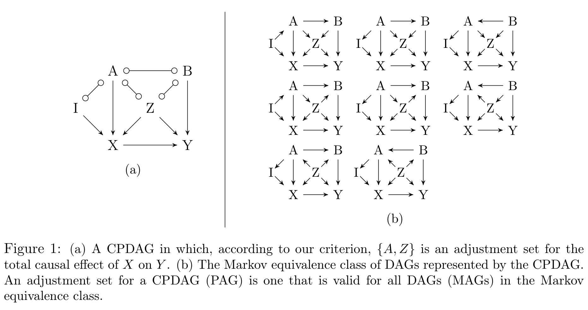
- 그림 1(a)의 CPDAG만 주어졌다고 합시다. 우리의 기준은 \(\{A, Z\}\)가 \(X \to Y\) 총효과에 대한 조정집합이라고 알려 줍니다.
- 이는 그림 1(b)에 나열된 8개 DAG 전부에서 \(\{A, Z\}\)가 조정집합이라는 뜻입니다. 즉 어느 DAG가 참인지 몰라도 인과효과를 추정할 수 있습니다.
- MAG나 PAG에 기준을 적용하면 마찬가지로 그 그래프가 대표하는 모든 DAG에서 유효한 조정집합을 얻습니다.
- 결정적으로, 그런 집합이 존재하기만 하면 우리의 기준은 반드시 그것을 찾아냅니다. 존재하지 않는다면, 그 인과효과는 공변량 조정으로는 식별 불가능합니다.
저자들은 이 능력이 “그래프 인과 모형은 모든 DAG가 제대로 특정되어 있음을 가정한다”(West & Koch, 2014)는 비판에 답하는 데 도움이 되기를 기대한다고 밝힙니다. 불완전한 구조 지식, 잠재 교란, 또는 둘 다를 허용하기 때문입니다.
1.4 저널 버전에서 추가된 것 (기여)
이 논문은 학회 버전(Perković et al., 2015)의 결과에 전체 증명을 붙이고, 다음의 새로운 결과들을 더했습니다.
- ① 구성적 집합(constructive set): Corollary 15에서, 조정집합이 하나라도 존재한다면 반드시 기준을 만족하는 특정한 집합을 정의합니다.
- ② m-분리로의 환원: Theorem 7에서, 조정집합을 그래프 \(\mathcal{G}\)의 특정 부분그래프에서의 m-분리 집합으로 표현할 수 있음을 보입니다. 이로써 조정집합 탐색 문제가 m-분리 집합 탐색 문제로 환원되며, 후자는 van der Zander et al. (2014)에서 이미 상세히 연구된 문제입니다.
- ③ 임의 방향화의 활용: Lemma 10에서, CPDAG(PAG) \(\mathcal{G}\)에 대한 모든 조정집합을 \(\mathcal{G}\)를 유효한 DAG(MAG)로 임의로 방향화한 그래프 하나에서 찾을 수 있음을 증명합니다. 기존 구현을 그대로 활용할 수 있게 해 주는 결과입니다.
- ④ 뒷문 기준들의 구성적 집합: Pearl의 뒷문 기준과 일반화 뒷문 기준에 대해서는 \(|\mathbf{X}| = 1\)인 경우에만 구성적 집합이 알려져 있었습니다. Corollary 22와 Corollary 24에서 일반적인 \(\mathbf{X}\)에 대한 구성적 집합을 제시합니다.
- ⑤ 기준들이 갈라지는 지점: Theorem 26에서 두 기준, 또는 세 기준 모두를 만족하는 집합이 존재하는 경우와, 일반화 조정 기준을 만족하는 집합만 존재하는 경우를 정확히 규명합니다.
- ⑥ DAG 조정 기준의 새 증명: 부록 E에서 Shpitser (2012)의 개정된 조정 기준에 대한 건전성·완전성 증명을 새로 제시합니다. 개정판에 대한 출판된 증명이 없었고 이 논문이 그 위에 세워져 있기 때문에, 저자들은 이를 반드시 제공해야 한다고 판단했습니다. 증명은 결코 자명하지 않지만 기초적인 개념만으로 전개됩니다.
1.5 논문의 범위 (무엇을 다루지 않는가)
- 조정으로 식별 가능한 효과 \(\subsetneq\) 식별 가능한 효과. 이 논문은 공변량 조정으로 식별 가능한 모든 인과효과를 찾아내지만, 그것이 식별 가능한 모든 인과효과는 아닙니다. 어떤 효과는 IDA 계열 접근(Maathuis et al., 2009, 2010; Nandy et al., 2017; Malinsky & Spirtes, 2017), Pearl의 앞문 기준(front-door criterion), 또는 ID 알고리즘(Tian & Pearl, 2002; Shpitser & Pearl, 2006)으로만 식별됩니다.
- 선택 변수(selection variable)는 없다고 가정합니다. MAG와 PAG는 원리적으로 관측되지 않은 선택 변수도 표현할 수 있지만, 선택 편향은 공변량 조정만으로는 인과효과 식별을 아예 불가능하게 만드는 경우가 많기 때문에 이 논문은 선택 변수가 없다고 둡니다. Bareinboim et al. (2014)이 서로 다른 출처의 데이터를 결합하는 등의 우회 방법을 논의하며, 이 기준과 그런 보조 방법의 결합은 향후 과제로 남습니다.
2. 준비 (Preliminaries)
본격적인 기준을 세우기 전에, 이 논문이 쓰는 그래프 용어를 빠짐없이 정리해 두겠습니다. 뒤에 나올 정의들이 “확정 상태(definite status)”, “적정 경로(proper path)”, “가시적 엣지(visible edge)” 같은 개념 위에 정확히 얹히기 때문에, 여기서 한 번 제대로 쌓아 두면 이후가 훨씬 수월합니다.
표기 규약은 다음과 같습니다.
- 집합: 볼드체 (예: \(\mathbf{X}\))
- 그래프: 필기체(calligraphic) (예: \(\mathcal{G}\))
- 노드: 대문자 (예: \(X\))
생략된 증명은 모두 부록에 있습니다.
2.1 노드와 엣지 (Nodes and edges)
- 그래프 \(\mathcal{G} = (\mathbf{V}, \mathbf{E})\)는 노드(변수) 집합 \(\mathbf{V} = \{X_1, \dots, X_p\}\)와 엣지 집합 \(\mathbf{E}\)로 구성됩니다.
- 단순 그래프(simple graph)만 다룹니다. 즉 임의의 두 노드 사이에 엣지는 최대 하나입니다.
- 두 노드가 엣지로 연결되어 있으면 인접(adjacent)하다고 합니다.
- 모든 엣지는 두 개의 엣지 마크(edge mark)를 갖고, 각 마크는 화살촉(arrowhead), 꼬리(tail), 원(circle) 중 하나입니다.
이 마크 조합으로 네 종류의 엣지가 만들어집니다.
| 엣지 | 이름 | 등장하는 그래프 |
|---|---|---|
| \(X \to Y\) | 유향(directed) | DAG, CPDAG, MAG, PAG |
| \(X \leftrightarrow Y\) | 양방향(bi-directed) | MAG, PAG |
| \(X \circ\!\!-\!\!\circ Y\) | 무향(non-directed) | CPDAG, PAG |
| \(X \circ\!\!\to Y\) | 부분 유향(partially directed) | PAG |
- 임의의 마크를 나타내는 자리표시자로 \(\ast\)를 씁니다. (원 논문은 이 자리에 굵은 점 \(\bullet\)을 쓰지만, 본 포스트에서는 다른 인과추론 포스트들과의 표기 일관성을 위해 \(\ast\)로 적겠습니다.)
- 엣지가 노드 \(X\)에서 화살촉을 가지면 그 엣지는 \(X\)로 들어온다(into)고 하고, 꼬리를 가지면 \(X\)에서 나간다(out of)고 합니다.
- 유향 그래프(directed graph): 유향 엣지만 갖는 그래프.
- 혼합 그래프(mixed graph): 유향 · 양방향 엣지를 가질 수 있는 그래프.
- 부분 혼합 그래프(partial mixed graph): 위 네 종류 엣지를 모두 가질 수 있는 그래프. 별도의 언급이 없으면 모든 정의는 부분 혼합 그래프에 대한 것입니다.
한 가지 표기상의 선택을 짚어 두겠습니다. Meek (1995) 등 기존 문헌은 CPDAG의 무향 엣지를 단순히 \(-\)로 표기하는데, 이 논문은 굳이 \(\circ\!\!-\!\!\circ\)로 씁니다. 네 그래프 클래스를 하나의 표기 체계로 통합하기 위해서입니다. CPDAG의 \(-\)와 PAG의 \(\circ\!\!-\!\!\circ\)는 “이 마크는 동치류 안에서 확정되지 않았다”는 같은 의미를 담고 있으므로, 같은 기호를 쓰면 정의를 한 번만 써도 네 클래스에 모두 적용됩니다. 이 통합이 곧 논문 전체의 전략이기도 합니다.
2.2 경로 (Paths)
- 경로(path) \(p\): \(\mathcal{G}\)에서 \(X\)부터 \(Y\)까지의 서로 다른 노드 나열 \(\langle X, \dots, Y \rangle\)로, 연속하는 모든 쌍이 인접한 것입니다.
- \(p = \langle X_1, \dots, X_k \rangle\)일 때 \(-p\)는 역순 경로 \(\langle X_k, \dots, X_1 \rangle\)을 뜻합니다.
- \(X_1\)과 \(X_k\)는 끝점(endpoint), 그 사이의 \(X_i\)는 비-끝점(non-endpoint) 노드입니다.
- 경로의 길이(length) = 경로 위 엣지의 개수.
- 유향 경로(directed path): 모든 엣지가 \(Y\) 방향을 가리키는 경로 \(X \to \cdots \to Y\). 이를 인과 경로(causal path)라고도 부릅니다.
- 가능한 유향 경로(possibly directed path) = 가능한 인과 경로(possibly causal path): \(X\) 방향을 가리키는 화살촉을 포함하지 않는 경로입니다.
- 비인과 경로(non-causal path): 가능한 인과 경로가 아닌 경로입니다.
- 유향 순환(directed cycle): \(X\)에서 \(Y\)로 가는 유향 경로 + 엣지 \(Y \to X\).
- 준 유향 순환(almost directed cycle): \(X\)에서 \(Y\)로 가는 유향 경로 + 엣지 \(Y \leftrightarrow X\).
- 적정 경로(proper path): 서로소인 두 집합 \(\mathbf{X}, \mathbf{Y}\)에 대해, \(\mathbf{X}\)에서 \(\mathbf{Y}\)로 가는 경로 중 첫 번째 노드만 \(\mathbf{X}\)에 속하는 경로입니다.
- 대응 경로(corresponding path): 두 그래프 \(\mathcal{G}, \mathcal{G}^\ast\)가 동일한 인접 관계를 가질 때, \(\mathcal{G}\)의 경로 \(p\)에 대해 같은 노드 나열로 이루어진 \(\mathcal{G}^\ast\)의 경로 \(p^\ast\)를 말합니다.
\(\mathbf{X}\)가 여러 개의 처치 변수를 담는 집합일 때, \(\mathbf{X}\) 안의 노드를 중간에 다시 통과하는 경로까지 세면 조건이 불필요하게 강해집니다. \(do(\mathbf{x})\)는 \(\mathbf{X}\)의 모든 원소에 동시에 개입하므로, \(\mathbf{X}\)의 두 번째 원소를 통과하는 경로는 개입에 의해 이미 끊겨 있습니다. 적정 경로는 바로 그런 경로를 논의에서 제외하는 장치이며, 이 논문이 \(|\mathbf{X}| \ge 1\)을 자연스럽게 다룰 수 있는 이유이기도 합니다.
부분수열 · 부분경로 · 연결(concatenation)
- 부분수열(subsequence): 경로 \(p\)에서 순서를 유지한 채 일부 노드를 지운 나열입니다. 부분수열이 반드시 경로인 것은 아닙니다.
- 부분경로(subpath): \(p = \langle X_1, \dots, X_m \rangle\)에 대해 \(p(X_i, X_k) = \langle X_i, X_{i+1}, \dots, X_k \rangle\) (\(1 \le i \le k \le m\)).
- 연결(concatenation): \(\oplus\)로 표기하며, 예컨대 \(p = p(X_1, X_k) \oplus p(X_k, X_m)\)입니다. 이 논문에서는 연결 결과가 다시 경로가 되는 경우에만 연결을 취합니다.
2.3 조상 관계 (Ancestral relationships)
- \(X \to Y\)이면 \(X\)는 \(Y\)의 부모(parent)입니다.
- \(X\)에서 \(Y\)로 가는 유향(가능한 유향) 경로가 있으면 \(X\)는 \(Y\)의 조상(가능한 조상), \(Y\)는 \(X\)의 후손(가능한 후손)입니다.
- 모든 노드는 자기 자신의 후손 · 가능한 후손 · 조상 · 가능한 조상입니다(관례).
- 표기: \(\mathrm{Pa}(X, \mathcal{G})\), \(\mathrm{De}(X, \mathcal{G})\), \(\mathrm{An}(X, \mathcal{G})\), \(\mathrm{PossDe}(X, \mathcal{G})\), \(\mathrm{PossAn}(X, \mathcal{G})\).
- 집합에 대해서는 합집합으로 정의합니다: \(\mathrm{Pa}(\mathbf{X}, \mathcal{G}) = \bigcup_{X \in \mathbf{X}} \mathrm{Pa}(X, \mathcal{G})\) (나머지도 동일).
2.4 충돌자 · 차폐 · 확정 상태 경로
- 경로 \(p\)가 \(X_i \ast\!\!\to X_j \leftarrow\!\!\ast X_k\)를 부분경로로 포함하면 \(X_j\)는 \(p\) 위의 충돌자(collider)입니다.
- 충돌자 경로(collider path): 모든 비-끝점 노드가 충돌자인 경로. 길이 1인 경로는 자명한 충돌자 경로입니다.
- \(\langle X_i, X_j, X_k \rangle\)는 \(X_i\)와 \(X_k\)가 인접하면 차폐 삼중항(shielded triple), 인접하지 않으면 비차폐 삼중항(unshielded triple)입니다. 경로 위의 모든 연속 삼중항이 비차폐이면 그 경로를 비차폐(unshielded) 경로라 합니다.
- 확정적 비충돌자(definite non-collider) (Zhang, 2008a): 경로 \(p\) 위의 노드 \(X_j\)가 다음 중 하나를 만족할 때입니다.
- \(p\) 위에서 \(X_j\)로부터 나가는 엣지가 적어도 하나 있거나,
- \(X_i \ast\!\!-\!\!\circ X_j \circ\!\!-\!\!\ast X_k\)가 \(p\)의 부분경로이면서 \(\langle X_i, X_j, X_k \rangle\)가 비차폐 삼중항인 경우.
- 경로 위의 충돌자는 항상 확정 상태이므로 확정적 충돌자(definite collider)입니다. DAG(MAG)에서는 확정적 비충돌자를 그냥 비충돌자라 부릅니다.
- 노드가 경로 위에서 확정 상태(definite status)라는 것은 충돌자이거나 확정적 비충돌자라는 뜻이고, 경로가 확정 상태라는 것은 모든 비-끝점 노드가 확정 상태라는 뜻입니다.
DAG나 MAG에서는 모든 마크가 확정되어 있으므로 경로 위 각 노드가 충돌자인지 아닌지 항상 결정됩니다. 그런데 CPDAG/PAG에는 원(○) 마크가 있어서, 동치류 안의 어떤 그래프에서는 충돌자이고 다른 그래프에서는 비충돌자인 노드가 생깁니다. 그런 노드는 차단 여부를 동치류 전체에 걸쳐 말할 수 없습니다. 그래서 이 논문의 차단 조건은 확정 상태 경로만을 대상으로 삼습니다. 이 제한이 없으면 기준의 완전성이 무너집니다.
2.5 m-분리와 m-연결 (m-separation and m-connection)
- 노드 \(X\)와 \(Y\) 사이의 확정 상태 경로 \(p\)가 집합 \(\mathbf{Z}\) (\(X, Y \notin \mathbf{Z}\))가 주어졌을 때 m-연결(m-connecting)한다는 것은,
- \(p\) 위의 모든 확정적 비충돌자가 \(\mathbf{Z}\)에 속하지 않고,
- \(p\) 위의 모든 충돌자가 \(\mathbf{Z}\) 안에 후손을 갖는 경우입니다 (Richardson, 2003).
- 그렇지 않으면 \(\mathbf{Z}\)가 \(p\)를 차단(block)한다고 합니다.
- \(\mathcal{G}\)가 DAG 또는 MAG이고 \(\mathbf{Z}\)가 \(X\)와 \(Y\) 사이의 모든 경로를 차단하면, \(X\)와 \(Y\)는 \(\mathbf{Z}\)가 주어졌을 때 \(\mathcal{G}\)에서 m-분리(m-separated)되었다고 합니다. 아니면 m-연결되었다고 합니다.
- 서로소인 집합 \(\mathbf{X}, \mathbf{Y}, \mathbf{Z}\)에 대해서는, 임의의 \(X \in \mathbf{X}\), \(Y \in \mathbf{Y}\) 쌍에 대해 m-분리가 성립할 때 \(\mathbf{X}\)와 \(\mathbf{Y}\)가 m-분리되었다고 합니다.
- DAG에서는 m-분리 · m-연결이 d-분리 · d-연결로 단순화됩니다 (Pearl, 2009). DAG에서 \(\mathbf{X}\)와 \(\mathbf{Y}\)가 \(\mathbf{Z}\) 하에 d-분리되면 \(\mathbf{X} \perp_d \mathbf{Y} \mid \mathbf{Z}\)로 씁니다.
2.6 인과 베이지안 네트워크와 절단 인수분해
- DAG: 유향 순환이 없는 유향 그래프.
- 베이지안 네트워크(Bayesian network): 쌍 \((\mathcal{G}, f)\)로, \(\mathcal{G}\)는 DAG이고 \(f\)는 다음과 같이 인수분해되는 \(\mathbf{V}\)의 결합밀도입니다 (Pearl, 2009).
\[ f(\mathbf{v}) = \prod_{i=1}^{p} f\big(x_i \mid \mathrm{Pa}(x_i, \mathcal{G})\big) \]
- \(\mathcal{G}\)의 모든 엣지 \(X_i \to X_j\)가 \(X_i\)의 \(X_j\)에 대한 직접 인과효과를 나타내면 그 DAG를 인과적(causal)이라 하고, 이때 \((\mathcal{G}, f)\)를 인과 베이지안 네트워크라 합니다.
- 인과 베이지안 네트워크가 주어지고 모든 변수가 관측되면, 개입 후 밀도(post-intervention density)를 쉽게 유도할 수 있습니다. 개입 \(do(\mathbf{X} = \mathbf{x})\)(줄여서 \(do(\mathbf{x})\))는 모집단 전체에서 \(\mathbf{X}\)를 \(\mathbf{x}\)로 설정하는 외부 개입을 뜻합니다.
\[ f(\mathbf{v} \mid do(\mathbf{x})) = \begin{cases} \displaystyle\prod_{\{i \mid X_i \in \mathbf{V} \setminus \mathbf{X}\}} f\big(x_i \mid \mathrm{Pa}(x_i, \mathcal{G})\big), & \mathbf{v} \text{가 } \mathbf{x} \text{와 정합적인 경우} \\[6pt] 0, & \text{그 외} \end{cases} \tag{1} \]
식 (1)은 절단 인수분해 공식(truncated factorization formula) (Pearl, 2009), g-공식(g-formula) (Robins, 1986), 또는 조작된 밀도(manipulated density) (Spirtes et al., 2000)라는 이름으로 알려져 있습니다.
식 (1)을 읽는 법은 간단합니다. 원래의 인수분해 \(\prod_i f(x_i \mid \mathrm{Pa}(x_i))\)에서 \(\mathbf{X}\)에 해당하는 항들만 통째로 지운 것입니다. \(X_i \in \mathbf{X}\)는 더 이상 부모에 의해 생성되지 않고 외부에서 값이 정해지므로 그 조건부 항이 사라지며, “절단(truncated)”이라는 이름이 여기서 나옵니다. 개입이 하는 일은 결국 해당 노드로 들어오는 엣지를 모두 잘라내는 것과 같습니다.
2.7 최대 조상 그래프 (Maximal ancestral graphs)
- 조상적(ancestral): 혼합 그래프 \(\mathcal{G}\)가 유향 순환도 준 유향 순환도 포함하지 않는 경우.
- 최대 조상 그래프(MAG): 조상 그래프 \(\mathcal{G} = (\mathbf{V}, \mathbf{E})\) 중, 인접하지 않은 임의의 두 노드 \(X, Y\)가 어떤 \(\mathbf{Z} \subseteq \mathbf{V} \setminus \{X, Y\}\)에 의해 m-분리될 수 있는 그래프.
- 잠재변수를 갖는 DAG는, 관측 변수들 사이의 조상 관계와 m-분리 관계를 보존하는 MAG로 유일하게 표현됩니다 (Richardson & Spirtes, 2002, p.981).
- 이 논문은 선택 편향을 부호화하지 않는 MAG만 다루므로, 여기서의 MAG는 유향(\(\to\))과 양방향(\(\leftrightarrow\)) 엣지만 가질 수 있습니다.
- 인과 DAG의 MAG를 인과 MAG라 합니다.
2.8 마르코프 동치성 (Markov equivalence)
DAG 쪽.
- 여러 DAG가 d-분리를 통해 같은 조건부 독립성을 부호화할 수 있습니다. 그런 DAG들의 모임이 마르코프 동치류(Markov equivalence class)이며, CPDAG \(\mathcal{C}\)로 유일하게 기술됩니다 (Meek, 1995).
- CPDAG \(\mathcal{C}\)는 그 동치류의 임의의 DAG와 같은 인접 관계를 갖습니다.
- \(\mathcal{C}\)의 유향 엣지 \(X \to Y\)는 동치류의 모든 DAG에서 \(X \to Y\)입니다.
- \(\mathcal{C}\)의 무향 엣지 \(X \circ\!\!-\!\!\circ Y\)에 대해서는, 동치류 안에 \(X \to Y\)인 DAG와 \(X \leftarrow Y\)인 DAG가 둘 다 존재합니다.
- 따라서 CPDAG는 유향(\(\to\))과 무향(\(\circ\!\!-\!\!\circ\)) 엣지만 갖습니다.
MAG 쪽.
- 여러 MAG가 m-분리를 통해 같은 조건부 독립성을 부호화할 수 있고, 그런 MAG들의 모임은 PAG \(\mathcal{P}\)로 유일하게 기술됩니다 (Richardson & Spirtes, 2002; Ali et al., 2009).
- PAG \(\mathcal{P}\)는 그 동치류의 임의의 MAG와 같은 인접 관계를 갖습니다.
- \(\mathcal{P}\)의 원이 아닌 모든 엣지 마크는 동치류의 모든 MAG에서 동일한 마크입니다. → 불변(invariant) 정보
- 이 논문은 최대 정보 PAG(maximally informative PAG) (Zhang, 2008b)만 다룹니다. 즉 \(\mathcal{P}\)의 임의의 원 마크 \(X \circ\!\!-\!\!\ast\)에 대해, 동치류 안에 \(X \leftarrow\!\!\ast\, Y\)인 MAG와 \(X -\!\!\ast\, Y\)인 MAG가 둘 다 존재합니다. → 원(○)은 진짜로 모호한 정보
- CPDAG(PAG) \(\mathcal{G}\)가 대표하는 모든 DAG(MAG)의 모임을 \([\mathcal{G}]\)로 씁니다.
2.9 정합적 밀도 (Consistent densities)
- 밀도 \(f\)가 인과 DAG \(\mathcal{D}\)와 정합적(consistent)이라 함은 \((\mathcal{D}, f)\)가 인과 베이지안 네트워크를 이루는 것입니다.
- 밀도 \(f\)가 인과 MAG \(\mathcal{M}\)과 정합적이라 함은, \(\mathcal{M}\)이 표현하는 어떤 인과 베이지안 네트워크 \((\mathcal{D}', f')\)가 존재하여 \(f\)가 \(f'\)의 관측 변수 주변분포인 것입니다.
- 밀도 \(f\)가 인과 CPDAG(PAG) \(\mathcal{G}\)와 정합적이라 함은, \([\mathcal{G}]\) 안의 어떤 인과 DAG(MAG)와 정합적인 것입니다.
2.10 가시적 엣지와 비가시적 엣지 (Visible and invisible edges)
DAG와 CPDAG의 모든 유향 엣지는 가시적(visible)이라고 약속합니다. MAG나 PAG에서는 다음과 같이 정의합니다.
MAG \(\mathcal{M}\) 또는 PAG \(\mathcal{G}\)에서 유향 엣지 \(X \to Y\)가 가시적(visible)이라 함은, \(Y\)에 인접하지 않은 노드 \(V\)가 존재하여 다음 중 하나가 성립하는 경우입니다.
- 엣지 \(V \ast\!\!\to X\)가 존재하거나,
- \(V\)와 \(X\) 사이에 \(X\)로 들어오는 충돌자 경로가 존재하고, 그 경로 위의 모든 비-끝점 노드가 \(Y\)의 부모인 경우.
가시적 엣지 \(X \to Y\)는 \(X\)와 \(Y\) 사이에 잠재 교란자가 없음을 뜻합니다. 가시적이지 않은 유향 엣지는 비가시적(invisible)이라 합니다.
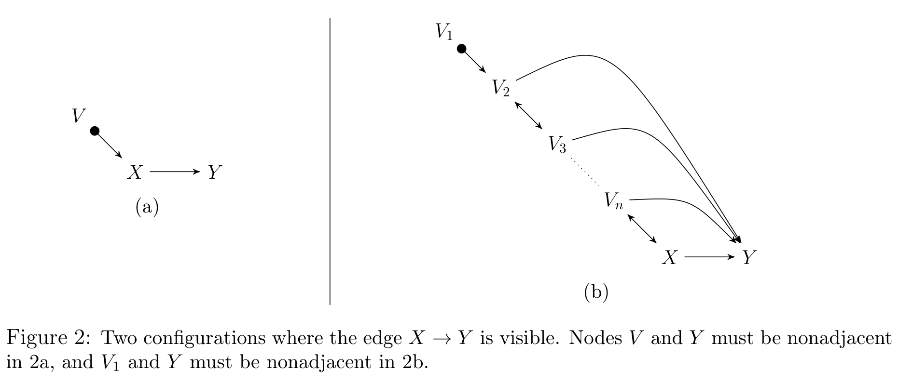
- FCI 알고리즘에서 비가시적 엣지는 Zhang (2008b)의 방향 결정 규칙 R5–R10 때문에 발생합니다.
- 선택 편향을 부호화하지 않는 MAG · PAG만 고려할 때는 R8–R10의 결과로만 발생합니다.
3. 일반화 조정 기준 (The Generalized Adjustment Criterion)
이제 논문의 본론입니다. 이하에서 \(\mathcal{G} = (\mathbf{V}, \mathbf{E})\)는 DAG, CPDAG, MAG, PAG 중 하나를 나타내고, \(\mathbf{X}, \mathbf{Y}, \mathbf{Z}\)는 \(\mathbf{V}\)의 쌍마다 서로소인 부분집합이며 \(\mathbf{X} \ne \emptyset\), \(\mathbf{Y} \ne \emptyset\)입니다. 여기서 \(\mathbf{X}\)는 처치(exposure) 집합, \(\mathbf{Y}\)는 결과(response) 집합입니다.
목표는 \((\mathbf{X}, \mathbf{Y})\)에 대한 조정집합의 건전하고 완전한 그래프 조건을 정의하는 것입니다. 즉 어떤 집합 \(\mathbf{Z}\)가 우리의 조건(Definition 4)을 만족하면 그것은 유효 조정집합이고(Definition 1), 존재하는 모든 유효 조정집합은 우리의 조건을 만족합니다(Theorem 5).
3.1 조정집합이란 무엇인가 (Definition 1)
인과 DAG, CPDAG, MAG, PAG \(\mathcal{G}\)에서 쌍마다 서로소인 노드 집합 \(\mathbf{X}, \mathbf{Y}, \mathbf{Z}\)를 생각합시다. \(\mathbf{Z}\)가 \(\mathcal{G}\)에서 \((\mathbf{X}, \mathbf{Y})\)에 대한 조정집합이라 함은, \(\mathcal{G}\)와 정합적인 임의의 밀도 \(f\)에 대해 다음이 성립하는 것입니다.
\[ f(\mathbf{y} \mid do(\mathbf{x})) = \begin{cases} f(\mathbf{y} \mid \mathbf{x}), & \mathbf{Z} = \emptyset \text{ 인 경우} \\[6pt] \displaystyle\int_{\mathbf{z}} f(\mathbf{y} \mid \mathbf{x}, \mathbf{z})\, f(\mathbf{z})\, d\mathbf{z}, & \text{그 외의 경우} \end{cases} \tag{2} \]
이 정의가 하는 일은 명확합니다. 좌변의 \(do\)-연산자를 포함한 개입 후 밀도를, 우변의 조건부 밀도들의 특정 함수로 식별하는 것입니다. 우변은 관측 데이터로부터 추정할 수 있으므로, 조정집합은 인과효과 계산의 핵심 도구가 됩니다.
Definition 1은 어떤 특정 밀도에서 우연히 등식이 성립하는 것이 아니라, 그 그래프와 정합적인 모든 밀도에서 성립할 것을 요구합니다. 그래서 완전성(completeness)을 증명할 때 저자들은 등식을 깨뜨리는 밀도를 하나 만들어 보이면 충분해집니다. 부록 E의 완전성 증명이 정확히 이 전략(선형 SEM + 가우시안 잡음으로 반례 밀도를 구성)을 씁니다.
3.2 다변량 정규분포에서의 확인 (Example 1)
조정집합이 어떻게 실제 추정으로 이어지는지, 다변량 정규분포라는 특수한 경우로 확인해 보겠습니다.
Example 1. \(f\)가 인과 DAG \(\mathcal{D}\)와 정합적인 다변량 정규 밀도라 하고, \(\mathbf{Z} \ne \emptyset\)이 \(\mathcal{D}\)에서 서로 다른 두 변수 \(X, Y\)에 대한 조정집합이며 \(\mathbf{Z} \cap \{X \cup Y\} = \emptyset\)이라 하자.
단계별로 유도해 보겠습니다.
1단계 (기댓값의 정의). 개입 후 분포에서 \(Y\)의 기댓값을 적분으로 씁니다.
\[ E(Y \mid do(x)) = \int_y y\, f(y \mid do(x))\, dy \]
2단계 (조정 공식 대입). \(\mathbf{Z}\)가 조정집합이므로 Definition 1의 식 (2)를 그대로 넣습니다.
\[ = \int_y y \int_{\mathbf{z}} f(y \mid x, \mathbf{z}) f(\mathbf{z})\, d\mathbf{z}\, dy \]
3단계 (적분 순서 교환, Fubini). \(f\)는 밀도이므로 적분 순서를 바꿀 수 있습니다.
\[ = \int_{\mathbf{z}} \left( \int_y y\, f(y \mid x, \mathbf{z})\, dy \right) f(\mathbf{z})\, d\mathbf{z} = \int_{\mathbf{z}} E(Y \mid x, \mathbf{z}) f(\mathbf{z})\, d\mathbf{z} \]
4단계 (정규성의 활용). 다변량 정규분포에서는 모든 조건부 기댓값이 선형입니다(부록 A의 Theorem 32). 따라서 어떤 \(\alpha, \gamma \in \mathbb{R}\)과 \(\beta \in \mathbb{R}^{|\mathbf{z}|}\)에 대해 \(E(Y \mid x, \mathbf{z}) = \alpha + \gamma x + \beta^{T} \mathbf{z}\)입니다.
\[ = \int_{\mathbf{z}} (\alpha + \gamma x + \beta^{T} \mathbf{z}) f(\mathbf{z})\, d\mathbf{z} = \alpha + \gamma x + \beta^{T} E(\mathbf{Z}) \]
5단계 (총 인과효과). \(X\)의 \(Y\)에 대한 총 인과효과를 \(\frac{\partial}{\partial x} E(Y \mid do(x))\)로 정의하면,
\[ \frac{\partial}{\partial x} E(Y \mid do(x)) = \gamma \]
를 얻습니다. 즉 총 인과효과는 \(Y\)를 \(X\)와 \(\mathbf{Z}\)에 회귀시켰을 때 \(X\)의 회귀계수 \(\gamma\)입니다. \(\blacksquare\)
“교란변수를 통제하고 회귀계수를 읽는다”는 실무 관행이 왜 정당한지를 이 예시가 정확히 말해 줍니다. 정당성은 회귀라는 절차 자체가 아니라 \(\mathbf{Z}\)가 조정집합이라는 그래프적 사실에서 나옵니다. \(\mathbf{Z}\)를 잘못 고르면 같은 회귀가 그대로 편향된 답을 냅니다. 그래서 “무엇을 통제할 것인가”가 “어떻게 추정할 것인가”보다 먼저 결정되어야 합니다.
3.3 기준을 세우기 위한 세 개의 정의 (Definitions 2–4)
Definition 1은 확률적 정의입니다. 우리 목표는 이것과 동치인 그래프 기준을 만드는 것입니다. 그러려면 세 개의 개념이 필요합니다.
순응성 (Amenability)
DAG, CPDAG, MAG, PAG \(\mathcal{G}\)에서 서로소인 노드 집합 \(\mathbf{X}, \mathbf{Y}\)를 생각합시다. \(\mathcal{G}\)가 \((\mathbf{X}, \mathbf{Y})\)에 대해 순응적(amenable)이라 함은, \(\mathcal{G}\)에서 \(\mathbf{X}\)로부터 \(\mathbf{Y}\)로 가는 모든 적정 가능 유향 경로가 \(\mathbf{X}\)에서 나가는 가시적 엣지로 시작하는 것입니다.
\(\mathcal{G}\)가 MAG이면 이 정의는 van der Zander et al. (2014)의 순응성 개념으로 환원됩니다. 직관은 두 갈래입니다.
- MAG · PAG의 경우: 유향 엣지 \(X \to Y\)는 인과효과를 나타낼 수도 있지만 인과효과와 잠재 교란의 혼합을 나타낼 수도 있습니다. 예컨대 그래프 \(X \to Y\)를 DAG로 해석하면 공집합이 유효 조정집합입니다. 그런데 같은 그래프를 MAG로 해석하면, DAG \(X \to Y\)를 표현할 수도 있지만 잠재변수 \(L\)을 통한 비인과 경로 \(X \leftarrow L \to Y\)가 추가된 DAG도 표현할 수 있습니다.
- CPDAG · PAG의 경우: 방향이 확정되지 않은 엣지가 있습니다. 그런 엣지를 포함하는 경로는 어떤 DAG에서는 인과 경로이고 다른 DAG에서는 비인과 경로일 수 있습니다. 예컨대 CPDAG \(X \circ\!\!-\!\!\circ Y\)는 DAG \(X \to Y\)와 \(X \leftarrow Y\)를 둘 다 표현합니다.
순응적인 그래프란, 위의 두 문제가 발생하지 않는 그래프입니다.
금지 집합 (Forbidden set)
DAG, CPDAG, MAG, PAG \(\mathcal{G}\)에서 서로소인 노드 집합 \(\mathbf{X}, \mathbf{Y}\)에 대해, \((\mathbf{X}, \mathbf{Y})\)에 대한 금지 집합은 다음과 같이 정의됩니다.
\[ \mathrm{Forb}(\mathbf{X}, \mathbf{Y}, \mathcal{G}) = \left\{ W' \in \mathbf{V} : W' \in \mathrm{PossDe}(W, \mathcal{G}),\ \exists\, W \notin \mathbf{X} \text{ 가 } \mathcal{G} \text{에서 } \mathbf{X} \text{로부터 } \mathbf{Y} \text{로 가는 적정 가능 유향 경로 위에 있음} \right\} \]
일반화 조정 기준 (GAC)
DAG, CPDAG, MAG, PAG \(\mathcal{G}\)에서 쌍마다 서로소인 노드 집합 \(\mathbf{X}, \mathbf{Y}, \mathbf{Z}\)를 생각합시다. \(\mathbf{Z}\)가 \(\mathcal{G}\)에서 \((\mathbf{X}, \mathbf{Y})\)에 대해 일반화 조정 기준을 만족한다는 것은 다음 세 조건이 모두 성립하는 것입니다.
- (순응성, Amenability) \(\mathcal{G}\)가 \((\mathbf{X}, \mathbf{Y})\)에 대해 조정 순응적이다.
- (금지 집합, Forbidden set) \(\mathbf{Z} \cap \mathrm{Forb}(\mathbf{X}, \mathbf{Y}, \mathcal{G}) = \emptyset\)이다.
- (차단, Blocking) \(\mathbf{X}\)에서 \(\mathbf{Y}\)로 가는 모든 적정 확정 상태 비인과 경로가 \(\mathcal{G}\)에서 \(\mathbf{Z}\)에 의해 차단된다.
\(\mathcal{G}\)가 DAG(MAG)이면 이 기준은 Shpitser (2012) (van der Zander et al., 2014)의 조정 기준으로 환원됩니다(부록 E의 Definition 55). 다만 일관성을 위해 논문은 모든 그래프 유형에 대해 일반화 조정 기준이라는 이름을 씁니다.
- 순응성은 \(\mathbf{Z}\)에 의존하지 않습니다. 즉 순응성 조건이 깨지면 어떤 집합도 \((\mathbf{X}, \mathbf{Y})\)에 대해 일반화 조정 기준을 만족할 수 없습니다. 그래프 자체의 성질입니다.
- 금지 집합 조건은 “넣으면 안 되는 변수”를 규정합니다.
- 차단 조건은 “반드시 막아야 하는 경로”를 규정합니다.
조정집합 탐색은 결국 금지 집합 밖에서, 차단을 달성하는 집합을 찾는 문제로 환원됩니다. 이 구조가 §4의 구성적 결과로 곧장 이어집니다.
3.4 왜 금지 집합인가: 걷기(walk)로 보는 직관
금지 집합에 인과 경로 위 노드뿐 아니라 그 후손들까지 들어가는 이유는 무엇일까요? 논문은 이를 걷기(walk) 개념으로 설명합니다. 단순화를 위해 DAG \(\mathcal{D}\)에서 \(\mathbf{X} = \{X\}\), \(\mathbf{Y} = \{Y\}\)인 경우를 봅시다.
- 인과 경로 위의 노드를 조정집합에 넣으면 안 된다는 것은 명백합니다. 그 노드를 조건화하면 인과 경로 자체가 막혀 총효과의 일부가 사라지기 때문입니다.
- 문제는 인과 경로 위 노드의 후손입니다. 이를 이해하려면 걷기(walk)를 봐야 합니다.
\(\mathcal{D}\)에서 걷기란 연속하는 모든 쌍이 인접한 노드 나열 \(\langle X, \dots, Y \rangle\)입니다. 경로와 달리 노드가 반복되어도 됩니다.
- 걷기 \(r = \langle X = V_0, V_1, \dots, V_k = Y \rangle\)가 비인과적(non-causal)이라 함은, 어떤 \(i \in \{0, \dots, k-1\}\)에 대해 \(V_i \leftarrow\!\!\ast\, V_{i+1}\)인 것입니다.
- 걷기 \(r\)이 \(\mathbf{Z}\)가 주어졌을 때 연결(connecting)한다는 것은, \(\mathbf{Z}\)가 \(r\) 위의 모든 충돌자를 포함하고 \(r\) 위의 어떤 비충돌자도 \(\mathbf{Z}\)에 없는 것입니다.
- Koster (2002): \(\mathbf{Z}\) 하에 \(X\)에서 \(Y\)로 연결하는 걷기가 존재한다 \(\iff\) \(\mathbf{Z}\) 하에 \(X\)에서 \(Y\)로 d-연결하는 경로가 존재한다.
이제 핵심 논증입니다. 인과 경로 \(p: X \to V_1 \to \cdots \to V_k \to Y\)가 있고 모든 \(V_i \notin \mathbf{Z}\)라고 합시다. 여기서 어떤 \(V_i\)의 후손 \(A\)를 \(\mathbf{Z}\)에 넣으면 다음 형태의 걷기가 만들어집니다.
\[ X \to \cdots \to V_i \to \cdots \to A \leftarrow \cdots \leftarrow V_i \to \cdots \to V_k \to Y \]
이 걷기는 \(A\)를 충돌자로 갖고 \(A \in \mathbf{Z}\)이므로 \(\mathbf{Z}\) 하에서 연결됩니다. 그리고 이 걷기는 비인과적입니다. 즉 \(A\)를 조정집합에 넣는 순간 \(X\)에서 \(Y\)로 가는 비인과 걷기가 열립니다. 이것이 금지 집합에 후손까지 포함되는 이유입니다.
3.5 주 정리: 건전성과 완전성 (Theorem 5)
인과 DAG, CPDAG, MAG, PAG \(\mathcal{G}\)에서 쌍마다 서로소인 노드 집합 \(\mathbf{X}, \mathbf{Y}, \mathbf{Z}\)를 생각하자. 그러면
\[ \mathbf{Z} \text{가 } \mathcal{G} \text{에서 } (\mathbf{X}, \mathbf{Y}) \text{에 대한 조정집합 (Definition 1)} \iff \mathbf{Z} \text{가 } \mathcal{G} \text{에서 } (\mathbf{X}, \mathbf{Y}) \text{에 대해 GAC를 만족 (Definition 4)} \]
이다.
이것이 Table 1의 마지막 행 네 칸을 \(\Leftrightarrow\)로 채우는 정리입니다. 왼쪽 방향이 건전성(기준을 만족하면 실제로 조정집합), 오른쪽 방향이 완전성(조정집합이면 반드시 기준을 만족)입니다.
3.6 차단 조건을 계산 가능한 형태로 (Definition 6, Theorem 7)
차단 조건을 모든 경로를 하나씩 확인하는 방식으로 검증하면, 어떤 경로가 비인과적인지 계속 추적해야 하므로 큰 그래프에서 감당이 되지 않습니다. 그래서 논문은 이를 부분그래프에서의 m-분리 조건으로 바꿉니다.
DAG, CPDAG, MAG, PAG \(\mathcal{G}\)에서 서로소인 노드 집합 \(\mathbf{X}, \mathbf{Y}\)를 생각합시다. 적정 뒷문 그래프 \(\mathcal{G}^{pbd}_{\mathbf{X}\mathbf{Y}}\)는 \(\mathcal{G}\)에서 다음을 제거하여 얻습니다.
\(\mathbf{X}\)에서 \(\mathbf{Y}\)로 가는 적정 가능 유향 경로 위에 있으면서 \(\mathbf{X}\)에서 나가는 모든 가시적 엣지
\(\mathcal{G}\)가 DAG나 MAG이면 이는 van der Zander et al. (2014)의 적정 뒷문 그래프 정의로 환원됩니다.
Definition 4의 차단 조건을 다음으로 바꾸어도 동치인 기준이 얻어진다.
(분리, Separation) \(\mathbf{Z}\)가 \(\mathcal{G}^{pbd}_{\mathbf{X}\mathbf{Y}}\)에서 \(\mathbf{X}\)와 \(\mathbf{Y}\)를 m-분리한다.
\(\mathcal{G}\)가 DAG나 MAG이면 Theorem 7은 van der Zander et al. (2014)의 Theorem 4.6으로 환원됩니다.
차단 조건은 “모든 적정 확정 상태 비인과 경로”라는 경로 단위의 서술이라, 그대로 구현하면 경로 수만큼의 비용이 듭니다. Theorem 7은 이를 하나의 부분그래프에서의 m-분리라는 집합 단위의 서술로 바꿉니다. m-분리는 그래프 순회 한 번으로 판정되고, 게다가 m-분리 집합을 전수 열거하는 알고리즘이 이미 존재합니다(van der Zander et al., 2014). §4.3의 효율적 구현과 §4의 구성적 결과가 모두 이 정리 위에 서 있습니다.
3.7 예시 (Examples 2–4)
Example 2: 기본 확인
Example 2. Figure 1(a)의 CPDAG \(\mathcal{C}\)로 돌아갑시다. \(\mathcal{C}\)는 \((X, Y)\)에 대해 순응적이고 \(\mathrm{Forb}(X, Y, \mathcal{C}) = \{Y\}\)입니다. \(X\)나 \(Y\)를 포함하지 않는 \(\{Z, A\}\)의 임의의 상위집합, 또는 \(\{Z, B\}\)의 임의의 상위집합이 \(\mathcal{C}\)에서 \((X, Y)\)에 대해 일반화 조정 기준을 만족함을 쉽게 확인할 수 있습니다.
여기서 \(\mathrm{Forb}(X, Y, \mathcal{C}) = \{Y\}\)인 이유를 짚어 보면, \(X\)에서 \(Y\)로 가는 적정 가능 유향 경로는 \(X \to Y\)뿐이고 그 위에서 \(X\)가 아닌 노드는 \(Y\) 하나이며, \(Y\)의 가능한 후손도 \(Y\) 자신뿐이기 때문입니다.
Example 3: 순응성이 깨지는 방식 (Figure 3)
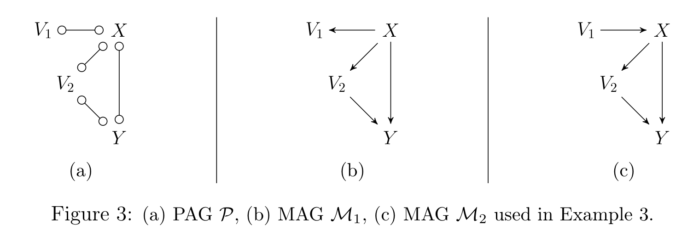
Example 3. Figure 3의 PAG \(\mathcal{P}\)(a)와 \([\mathcal{P}]\)에 속한 두 MAG \(\mathcal{M}_1\)(b), \(\mathcal{M}_2\)(c)를 봅시다.
- \(\mathcal{P}\)가 순응적이지 않은 이유: 경로 \(X \circ\!\!-\!\!\circ Y\) 때문입니다. 이 엣지는 방향이 확정되지 않았으므로 “가시적 엣지로 시작하는 가능 유향 경로”가 아닙니다.
- \(\mathcal{M}_1\)이 순응적이지 않은 이유: 비가시적 엣지 \(X \to Y\) 때문입니다. 이는 \(\mathcal{M}_1\)이 \(X\)와 \(Y\) 모두의 조상인 숨은 교란자를 포함하는 DAG도 표현한다는 뜻입니다.
- \(\mathcal{M}_2\)가 순응적인 이유: 엣지 \(V_1 \to X\) 때문에 \(X \to Y\)와 \(X \to V_2\)가 가시적입니다(\(V_1\)은 \(Y\)나 \(V_2\)와 인접하지 않습니다). 그리고 \(\mathcal{M}_2\)에는 \(X\)에서 \(Y\)로 가는 적정 확정 상태 비인과 경로가 없으므로, 공집합이 \((X, Y)\)에 대해 일반화 조정 기준을 만족합니다.
- 마지막 관찰: \(\mathcal{M}_1\)을 DAG로 해석하면 순응적입니다. 즉 순응성은 그래프를 어떤 클래스로 해석하느냐에 결정적으로 의존합니다.
Example 4: 순응적이어도 조정집합이 없을 수 있다 (Figure 4)
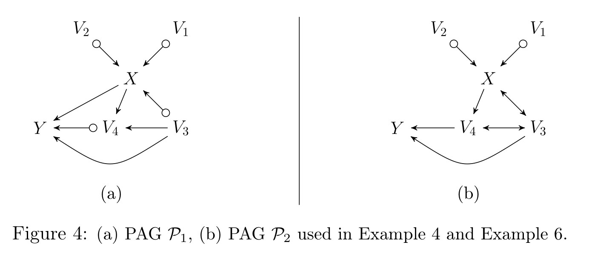
Example 4. Figure 4(a)의 \(\mathcal{P}_1\)과 Figure 4(b)의 \(\mathcal{P}_2\)를 봅시다. 둘 다 \((X, Y)\)에 대해 순응적입니다. 그럼에도 \(\mathcal{P}_1\)에는 조정집합이 있고 \(\mathcal{P}_2\)에는 없습니다. 즉 순응성은 조정집합 존재의 충분조건이 아닙니다.
\(\mathcal{P}_1\)의 경우.
- \(\mathrm{Forb}(X, Y, \mathcal{P}_1) = \{V_4, Y\}\)입니다.
- \(X\)에서 \(Y\)로 가는 적정 확정 상태 비인과 경로는 두 개입니다: \(X \leftarrow\!\!\circ\, V_3 \to Y\)와 \(X \to V_4 \leftarrow V_3 \to Y\).
- 경로 \(X \leftarrow\!\!\circ\, V_3 \to V_4 \circ\!\!\to Y\)는 확정 상태가 아닙니다. \(V_4\)가 이 경로 위에서 확정 상태가 아니기 때문입니다.
- 두 적정 확정 상태 비인과 경로는 \(V_3\)를 포함하는 임의의 집합에 의해 차단됩니다.
- 따라서 \((X, Y)\)에 대해 GAC를 만족하는 집합은 정확히 다음 넷입니다: \(\{V_3\}\), \(\{V_1, V_3\}\), \(\{V_2, V_3\}\), \(\{V_1, V_2, V_3\}\).
\(\mathcal{P}_2\)의 경우.
- \(\mathrm{Forb}(X, Y, \mathcal{P}_2) = \mathrm{Forb}(X, Y, \mathcal{P}_1) = \{V_4, Y\}\)로 동일합니다.
- 적정 확정 상태 비인과 경로가 세 개입니다.
- \(p_1: X \leftrightarrow V_3 \to Y\)
- \(p_2: X \leftrightarrow V_3 \leftrightarrow V_4 \to Y\)
- \(p_3: X \to V_4 \leftrightarrow V_3 \to Y\)
- \(p_1\)을 막으려면 반드시 \(V_3\)를 써야 합니다. 그런데 \(V_3\)를 쓰면 \(p_2\)에서 \(V_3\)가 충돌자이므로 \(p_2\)가 열리고, \(p_2\)를 막으려면 \(V_4\)가 필요합니다.
- 그러나 \(V_4 \in \mathrm{Forb}(X, Y, \mathcal{P}_2)\)이므로 금지 집합 조건에 걸려 쓸 수 없습니다.
- 결론: \(\mathcal{P}_2\)에서 \((X, Y)\)에 대해 GAC를 만족하는 집합은 존재하지 않습니다.
3.8 Theorem 5의 증명 구조 (Lemmas 8–10)
일반화 조정 기준이 건전하고 완전함을 보이기 위해, 저자들은 DAG와 MAG에 대한 조정 기준이 이미 건전하고 완전하다는 사실에 기댑니다.
- DAG의 조정 기준: Shpitser et al. (2010)에서 처음 제시되고 미출판 부록 Shpitser (2012)에서 개정되었습니다. 개정판에 대한 출판된 증명이 없었으므로, 이 논문의 부록 E가 그 증명을 새로 제공합니다(Theorem 56).
- MAG의 조정 기준: van der Zander et al. (2014, Theorem 5.8)에서 건전·완전함이 증명되었습니다. 다만 그 증명은 Shpitser (2012)의 DAG 결과를 가정하고 있었으므로, 이 논문의 Theorem 56이 그 빈 고리를 메웁니다.
따라서 남은 일은 “동치류 수준(CPDAG/PAG)의 조건”과 “동치류 안 개별 그래프(DAG/MAG) 수준의 조건”을 잇는 것이며, 그 다리가 아래 세 보조정리입니다.
Lemma 8 (순응성). CPDAG(PAG) \(\mathcal{G}\)에서 서로소인 \(\mathbf{X}, \mathbf{Y}\)에 대해:
- \(\mathcal{G}\)가 \((\mathbf{X}, \mathbf{Y})\)에 대해 순응적이면, \([\mathcal{G}]\)의 모든 DAG(MAG)가 순응적이다.
- \(\mathcal{G}\)가 순응성 조건을 위배하면, \(\mathcal{G}\)에서 \((\mathbf{X}, \mathbf{Y})\)에 대한 조정집합은 존재하지 않는다.
Lemma 9 (금지 집합). \(\mathcal{G}\)가 \((\mathbf{X}, \mathbf{Y})\)에 대해 순응적이면 다음이 동치이다.
- \(\mathbf{Z}\)가 \(\mathcal{G}\)에서 금지 집합 조건을 만족한다.
- \(\mathbf{Z}\)가 \([\mathcal{G}]\)의 모든 DAG(MAG)에서 금지 집합 조건을 만족한다.
Lemma 10 (차단). \(\mathcal{G}\)가 순응적이고 \(\mathbf{Z}\)가 금지 집합 조건을 만족하면 다음이 동치이다.
- \(\mathbf{Z}\)가 \(\mathcal{G}\)에서 차단 조건을 만족한다.
- \(\mathbf{Z}\)가 \([\mathcal{G}]\)의 모든 DAG(MAG)에서 차단 조건을 만족한다.
- \(\mathbf{Z}\)가 \([\mathcal{G}]\)의 어떤 하나의 DAG \(\mathcal{D}\)(MAG \(\mathcal{M}\))에서 차단 조건을 만족한다.
세 보조정리 중 실무적으로 가장 강력한 것이 Lemma 10의 (iii)입니다. “모든 MAG에서 성립”을 확인하려면 동치류를 전부 열거해야 하지만, (iii)에 의하면 아무 MAG 하나만 골라 확인해도 충분합니다. 이 덕분에 §4.3의 절차가 “PAG를 아무 MAG로나 방향화한 뒤 기존 DAG/MAG 알고리즘을 그대로 돌린다”는 형태가 될 수 있습니다.
Theorem 5의 증명 흐름은 다음과 같습니다.
- \(\mathcal{G}\)가 DAG(MAG)인 경우는 기존 결과로 환원되므로, CPDAG(PAG)인 경우만 다룹니다.
- (\(\Leftarrow\), 건전성) \(\mathbf{Z}\)가 CPDAG(PAG) \(\mathcal{G}\)에서 GAC를 만족한다고 하면, Lemma 8 → 9 → 10을 차례로 적용하여 \(\mathbf{Z}\)가 \([\mathcal{G}]\)의 모든 DAG(MAG)에서 GAC를 만족함이 따릅니다. DAG(MAG)에서 GAC는 조정에 대해 건전하므로, \(\mathbf{Z}\)는 모든 \(\mathcal{D}\)(\(\mathcal{M}\))에서 조정집합입니다.
- (\(\Rightarrow\), 완전성) \(\mathbf{Z}\)가 GAC를 만족하지 않는다고 합시다.
- 순응성이 깨진 경우: Lemma 8에 의해 조정집합 자체가 존재하지 않습니다.
- 금지 집합 조건이 깨진 경우: Lemma 9에 의해 \([\mathcal{G}]\) 안에 \(\mathbf{Z}\)가 GAC를 만족하지 않는 DAG(MAG)가 존재합니다. DAG(MAG)에서 GAC는 완전하므로 그 그래프에서 \(\mathbf{Z}\)는 조정집합이 아닙니다.
- 차단 조건이 깨진 경우: Lemma 10에 의해 마찬가지로 그런 DAG(MAG)가 존재합니다.
- 어느 경우든 \(\mathbf{Z}\)는 \(\mathcal{G}\)에 대한 조정집합이 아닙니다. \(\square\)
4. 조정집합의 구성 (Constructing Adjustment Sets)
§3이 “주어진 \(\mathbf{Z}\)가 조정집합인지 판정하는” 문제를 해결했다면, §4는 “조정집합을 실제로 만들어 내는” 문제를 다룹니다. 세 단계로 진행됩니다.
- Theorem 11: \(\mathbf{X}\)의 전처리(pre-processing) — 쓸데없는 처치 변수를 떼어내면 식별이 가능해지는 경우가 있습니다.
- Theorem 14 / Corollary 15: 구성적 집합 — 조정집합이 존재하기만 하면 반드시 기준을 만족하는 명시적 집합.
- §4.3: 전수 열거 — 기존 프레임워크를 이식하여 모든 (최소) 조정집합을 나열합니다.
4.1 처치 집합의 전처리 (Theorem 11)
\(f(\mathbf{y} \mid do(\mathbf{x}))\)가 \(\mathcal{G}\)에서 조정으로 식별되지 않더라도, 어떤 부분집합 \(\mathbf{X}' \subseteq \mathbf{X}\)에 대해 \(f(\mathbf{y} \mid do(\mathbf{x})) = f(\mathbf{y} \mid do(\mathbf{x}'))\)이면서 후자는 식별 가능한 경우가 있습니다.
인과 DAG, CPDAG, MAG, PAG \(\mathcal{G}\)에서 서로소인 노드 집합 \(\mathbf{X}, \mathbf{Y}\)를 생각하자. \(\mathbf{X}' \subseteq \mathbf{X}\)가 \(\mathbf{X} \setminus \mathbf{X}'\)에서 \(\mathbf{Y}\)로 가는, \(\mathbf{X}\)에 대해 적정인 가능 유향 경로가 없도록 선택되었다고 하자. 그러면
\[ f(\mathbf{y} \mid do(\mathbf{x})) = \begin{cases} f(\mathbf{y}), & \mathbf{X}' = \emptyset \\[4pt] f(\mathbf{y} \mid do(\mathbf{x}')), & \text{그 외} \end{cases} \]
이다. 나아가 \(\mathbf{X}' \ne \emptyset\)이고 \(\mathbf{Z}\)가 \(\mathcal{G}\)에서 \((\mathbf{X}, \mathbf{Y})\)에 대한 조정집합이면, \(\mathbf{Z}\)는 \((\mathbf{X}', \mathbf{Y})\)에 대한 조정집합이기도 하다.
따라서 저자들은 다음의 전처리를 권합니다.
\(\mathcal{G}\)에서 \(\mathbf{Y}\)로 가는 (그리고 \(\mathbf{X}\)에 대해 적정인) 가능 유향 경로를 갖지 않는 모든 \(X \in \mathbf{X}\)를 제거한다. 즉 \(\mathbf{W}\)를 \(\mathbf{X}\)에 대해 적정인 가능 유향 경로로 \(\mathbf{Y}\)에 도달하는 모든 노드의 집합이라 할 때, \(\mathbf{X}' = \mathbf{X} \cap \mathbf{W}\)로 둔다.
\(\mathbf{W}\)의 선택과 Theorem 11의 증명에 의해, \(\mathbf{X}'\)의 모든 노드는 \(\mathbf{X}'\)에 대해 적정인 가능 유향 경로로 \(\mathbf{Y}\)에 도달합니다.
이 전처리는 손해를 끼치지 않으면서, 때때로 식별을 가능하게 만듭니다.
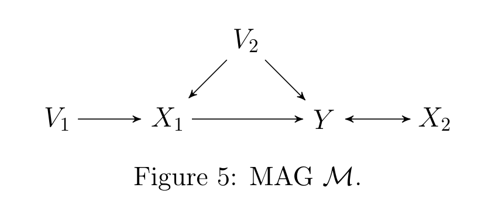
Figure 5의 MAG \(\mathcal{M}\)에서:
- \((\{X_1, X_2\}, Y)\)에 대한 조정집합은 존재하지 않습니다. (\(Y \leftrightarrow X_2\)의 잠재 교란 때문입니다.)
- 그러나 \(X_2\)에서 \(Y\)로 가는, \(\{X_1, X_2\}\)에 대해 적정인 가능 유향 경로는 없습니다.
- 그리고 \(\{V_2\}\)는 \((X_1, Y)\)에 대한 조정집합입니다.
- 따라서 Theorem 11과 Theorem 5에 의해
\[ f(y \mid do(x_1, x_2)) = f(y \mid do(x_1)) = \int_{v_2} f(y \mid x_1, v_2) f(v_2)\, dv_2 \]
가 성립합니다.
4.2 구성적 집합 (Definitions 12–13, Theorem 14, Corollary 15)
DAG, CPDAG, MAG, PAG \(\mathcal{G}\)에서 서로소인 노드 집합 \(\mathbf{X}, \mathbf{Y}\)에 대해 다음을 정의한다.
\[ \mathrm{Adjust}(\mathbf{X}, \mathbf{Y}, \mathcal{G}) = \mathrm{PossAn}(\mathbf{X} \cup \mathbf{Y}, \mathcal{G}) \setminus \big(\mathbf{X} \cup \mathbf{Y} \cup \mathrm{Forb}(\mathbf{X}, \mathbf{Y}, \mathcal{G})\big) \tag{3} \]
\(\mathcal{G}\)가 DAG나 MAG이면 “가능한 조상”이 “조상”으로 바뀌어 van der Zander et al. (2014)의 정의로 환원됩니다.
\[ \mathrm{Adjust}(\mathbf{X}, \mathbf{Y}, \mathcal{G}) = \mathrm{An}(\mathbf{X} \cup \mathbf{Y}, \mathcal{G}) \setminus \big(\mathbf{X} \cup \mathbf{Y} \cup \mathrm{Forb}(\mathbf{X}, \mathbf{Y}, \mathcal{G})\big) \]
“\(\mathbf{X}\)나 \(\mathbf{Y}\)의 (가능한) 조상 전부를 넣되, 처치·결과 자신과 금지 집합만 빼라.” 조상만 취하는 이유는, m-분리에서 차단에 실제로 기여할 수 있는 노드는 끝점들의 조상뿐이기 때문입니다(부록 A의 Lemma 37, Theorem 35). 금지 집합을 빼는 이유는 GAC 조건 2 때문이고요. 즉 이 집합은 “쓸 수 있는 것을 최대한 다 쓴” 집합입니다.
DAG, CPDAG, MAG, PAG \(\mathcal{G}\)의 노드 집합 \(\mathbf{I}\)가 후손적(descendral)이라 함은 \(\mathbf{I} = \mathrm{PossDe}(\mathbf{I}, \mathcal{G})\)인 것이다.
후손적 집합은 자기 자신의 조상을 모두 포함하는 조상적(ancestral) 집합의 쌍대 개념입니다. \(\mathrm{Forb}(\mathbf{X}, \mathbf{Y}, \mathcal{G})\)와 \(\mathrm{PossDe}(\mathbf{X}, \mathcal{G})\)는 둘 다 후손적 집합이며, 이 성질이 증명 전반에 걸쳐 쓰입니다. 또한 \(\mathbf{A}\)가 조상적이고 \(\mathbf{B}\)가 후손적이면 \(\mathbf{A} \setminus \mathbf{B}\)는 조상적이고 \(\mathbf{B} \setminus \mathbf{A}\)는 후손적입니다.
DAG, CPDAG, MAG, PAG \(\mathcal{G}\)에서 서로소인 노드 집합 \(\mathbf{X}, \mathbf{Y}\)를 생각하자. \(\mathbf{I} \supseteq \mathrm{Forb}(\mathbf{X}, \mathbf{Y}, \mathcal{G})\)를 \(\mathcal{G}\)의 후손적 집합이라 하자. 그러면
\[ \exists\, \mathbf{Z} \text{ 가 GAC를 만족하며 } \mathbf{Z} \cap \mathbf{I} = \emptyset \iff \mathrm{Adjust}(\mathbf{X}, \mathbf{Y}, \mathcal{G}) \setminus \mathbf{I} \text{ 가 GAC를 만족} \]
이다.
Theorem 14를 읽는 법: “\(\mathbf{I}\)를 피하는 조정집합이 하나라도 있다면, \(\mathrm{Adjust} \setminus \mathbf{I}\)라는 특정한 하나가 반드시 조정집합이다.” 즉 탐색 없이 후보를 하나 찍어 볼 수 있게 해 주는 정리입니다.
\(\mathbf{I}\)로 취할 수 있는 가장 작은 집합은 \(\mathrm{Forb}(\mathbf{X}, \mathbf{Y}, \mathcal{G})\)이며, 이때 다음 따름정리가 나옵니다.
DAG, CPDAG, MAG, PAG \(\mathcal{G}\)에서 서로소인 노드 집합 \(\mathbf{X}, \mathbf{Y}\)에 대해 다음이 동치이다.
- (i) \(\mathcal{G}\)에서 \((\mathbf{X}, \mathbf{Y})\)에 대한 조정집합이 존재한다.
- (ii) \(\mathrm{Adjust}(\mathbf{X}, \mathbf{Y}, \mathcal{G})\)가 \((\mathbf{X}, \mathbf{Y})\)에 대해 GAC를 만족한다.
- (iii) \(\mathcal{G}\)가 \((\mathbf{X}, \mathbf{Y})\)에 대해 순응적이고, \(\mathrm{Adjust}(\mathbf{X}, \mathbf{Y}, \mathcal{G})\)가 차단 조건을 만족한다.
조정집합의 존재 여부를 판정하려면 원래는 \(2^{|\mathbf{V}|}\)개의 부분집합을 다 확인해야 할 것처럼 보입니다. Corollary 15는 그것을 집합 하나만 확인하면 되는 문제로 바꿉니다. 게다가 \(\mathrm{Adjust}\)는 (가능한) 조상 관계만으로 정의되므로 그래프 순회로 선형 시간에 구성됩니다. “조정으로 식별 가능한가?”라는 질문이 이로써 다항 시간 판정 문제가 됩니다.
한편 Pearl의 뒷문 기준은 DAG \(\mathcal{D}\)에서 \(\mathbf{X}\)의 후손을 쓰지 못하게 하고, 일반화 뒷문 기준은 \(\mathbf{X}\)의 가능한 후손을 쓰지 못하게 합니다. 따라서 \(\mathbf{I}\)로 취할 또 하나의 자연스러운 선택이 \(\mathrm{PossDe}(\mathbf{X}, \mathcal{G})\)이며, §5에서 이 선택으로 두 뒷문 기준의 구성적 집합을 정의하게 됩니다.
4.3 예시 (Examples 5–6)
Example 5. 다시 Figure 1(a)의 CPDAG \(\mathcal{C}\)를 봅시다. Example 2에서 확인했듯 \(\mathcal{C}\)는 \((X, Y)\)에 대해 순응적입니다.
\[\mathrm{Adjust}(X, Y, \mathcal{C}) = \{X, Y, I, A, Z, B\} \setminus \{X, Y\} = \{I, A, Z, B\}\]
이 집합은 \((X, Y)\)에 대해 차단 조건을 만족하므로, Corollary 15에 의해 \(\{I, A, Z, B\}\)는 \(\mathcal{C}\)에서 \((X, Y)\)에 대해 일반화 조정 기준을 만족합니다.
Example 6. 다시 Figure 4의 두 PAG \(\mathcal{P}_1\), \(\mathcal{P}_2\)를 봅시다. Example 4에서 확인했듯 둘 다 순응적입니다.
- \(\mathcal{P}_1\): \(\mathrm{Forb}(X, Y, \mathcal{P}_1) = \{V_4, Y\}\)이므로 \[\mathrm{Adjust}(X, Y, \mathcal{P}_1) = \{X, Y, V_1, V_2, V_3, V_4\} \setminus \{X, Y, V_4\} = \{V_1, V_2, V_3\}\] 이 집합은 차단 조건을 만족하므로 GAC를 만족합니다.
- \(\mathcal{P}_2\): 마찬가지로 \(\mathrm{Adjust}(X, Y, \mathcal{P}_2) = \{V_1, V_2, V_3\}\)입니다. 그런데 이 집합은 경로 \(X \leftrightarrow V_3 \leftrightarrow V_4 \to Y\)를 차단하지 못합니다(\(V_3 \in \mathbf{Z}\)이므로 충돌자 \(V_3\)가 열리고, \(V_4 \notin \mathbf{Z}\)이지만 \(V_4\)는 이 경로에서 확정적 비충돌자가 아니라 \(V_4 \to Y\) 방향의 통과 노드입니다). 따라서 차단 조건을 만족하지 않고, Corollary 15에 의해 \(\mathcal{P}_2\)에는 조정집합이 존재하지 않습니다.
Example 4에서는 세 경로를 일일이 확인해야 했지만, Example 6에서는 집합 하나의 차단 여부만 보면 같은 결론에 도달합니다. Corollary 15의 실용적 가치가 이 대비에서 드러납니다.
4.4 Theorem 14의 증명 (Lemmas 16–17)
Theorem 14의 증명은 두 보조정리에 크게 의존합니다. 이들의 증명은 부록 C에 있으며, Lemma 17은 Richardson (2003)의 Lemma 1(부록 A의 Lemma 37)과 관련됩니다.
DAG, CPDAG, MAG, PAG \(\mathcal{G}\)에서 서로소인 \(\mathbf{X}, \mathbf{Y}\)와, 후손적 집합 \(\mathbf{I} \supseteq \mathrm{Forb}(\mathbf{X}, \mathbf{Y}, \mathcal{G})\)를 생각하자. \(\mathrm{Adjust}(\mathbf{X}, \mathbf{Y}, \mathcal{G}) \setminus \mathbf{I}\)가 주어졌을 때 m-연결하는 적정 확정 상태 비인과 경로가 존재하면, 다음을 모두 만족하는 경로 \(p\)가 존재한다.
- (i) \(p\)는 \(\mathbf{X}\)에서 \(\mathbf{Y}\)로 가는 적정 확정 상태 비인과 경로이고,
- (ii) \(p\) 위의 모든 충돌자가 \(\mathrm{Adjust}(\mathbf{X}, \mathbf{Y}, \mathcal{G}) \setminus \mathbf{I}\)에 속하고,
- (iii) \(p\) 위의 모든 확정적 비충돌자가 \(\mathbf{I}\)에 속하고,
- (iv) \(p\) 위의 임의의 충돌자 \(C\)에 대해, \(C\)에서 \(\mathbf{X} \cup \mathbf{Y}\)로 가는 비차폐 가능 유향 경로가 존재하며 그것은 \(\circ\!\!\to\) 또는 \(\to\)로 시작한다.
DAG, CPDAG, MAG, PAG \(\mathcal{G}\)에서 쌍마다 서로소인 \(\mathbf{X}, \mathbf{Y}, \mathbf{Z}\)와, \(\mathbf{Z} \cap \mathbf{I} = \emptyset\)인 집합 \(\mathbf{I} \supseteq \mathrm{Forb}(\mathbf{X}, \mathbf{Y}, \mathcal{G})\)를 생각하자. 경로 \(p\)가 다음을 만족한다고 하자.
- (i) \(p\)는 \(\mathbf{X}\)에서 \(\mathbf{Y}\)로 가는 적정 확정 상태 비인과 경로이고,
- (ii) \(p\) 위의 모든 충돌자가 \(\mathrm{An}(\mathbf{X} \cup \mathbf{Y} \cup \mathbf{Z}, \mathcal{G}) \setminus \mathbf{I}\)에 속하고,
- (iii) \(p\) 위의 어떤 확정적 비충돌자도 \(\mathbf{Z}\)에 속하지 않는다.
그러면 \(\mathcal{G}\)에서 \(\mathbf{Z}\)가 주어졌을 때 m-연결하는 적정 확정 상태 비인과 경로가 존재한다.
증명의 골격 (귀류법). 자명하지 않은 방향만 봅니다. \(\mathbf{Z} \cap \mathbf{I} = \emptyset\)이면서 GAC를 만족하는 집합 \(\mathbf{Z}\)가 존재한다고 가정하고, \(\mathrm{Adjust}(\mathbf{X}, \mathbf{Y}, \mathcal{G}) \setminus \mathbf{I}\)가 GAC를 만족함을 보입니다.
- 순응성은 \(\mathbf{Z}\)의 존재로부터 즉시 따릅니다(순응성은 \(\mathbf{Z}\)와 무관한 그래프의 성질).
- 금지 집합 조건은 \(\mathrm{Forb} \subseteq \mathbf{I}\)이므로 \(\mathrm{Adjust} \setminus \mathbf{I}\)에서 자동으로 성립합니다.
- 남은 것은 차단 조건입니다. 귀류법으로, \(\mathrm{Adjust} \setminus \mathbf{I}\)가 주어졌을 때 m-연결하는 적정 확정 상태 비인과 경로가 있다고 가정합니다.
- Lemma 16으로 그 경로를 (i)–(iv)를 만족하는 정규형 \(p^\ast\)로 바꿉니다.
- \(p^\ast\)는 Lemma 17의 (i)을 만족합니다. Lemma 16(iii)에 의해 \(p^\ast\)의 모든 확정적 비충돌자가 \(\mathbf{I}\)에 있고 \(\mathbf{Z} \cap \mathbf{I} = \emptyset\)이므로 어떤 확정적 비충돌자도 \(\mathbf{Z}\)에 없어 Lemma 17의 (iii)도 만족합니다.
- \(\mathcal{G}\)가 DAG · CPDAG · MAG인 경우: Lemma 16(iv)에 의해 모든 충돌자가 \(\mathrm{An}(\mathbf{X} \cup \mathbf{Y}, \mathcal{G})\)에 있고, (ii)와 합치면 Lemma 17의 (ii)도 만족됩니다.
- \(\mathcal{G}\)가 PAG인 경우: \(\mathcal{G}\)의 \(\circ\!\!\to\)를 \(\to\)로 바꾸고 \(\circ\!\!-\!\!\circ\) 부분그래프를 비차폐 충돌자가 생기지 않도록 DAG로 방향화하여(부록 A의 Lemma 43) MAG \(\mathcal{M} \in [\mathcal{G}]\)를 얻습니다. \(p^\ast\)에 대응하는 \(\mathcal{M}\)의 경로 \(p\)가 Lemma 17의 조건을 만족함을 확인합니다. \(\mathrm{Forb}(\mathbf{X}, \mathbf{Y}, \mathcal{G}) \supseteq \mathrm{Forb}(\mathbf{X}, \mathbf{Y}, \mathcal{M})\)이라는 점이 여기서 쓰입니다.
- 두 경우 모두 Lemma 17이 적용되어 \(\mathbf{Z}\)가 차단 조건을 위배한다는 결론이 나오고(PAG의 경우 Lemma 10과 모순), 이는 가정에 반합니다. \(\square\)
4.5 구현 (Implementation)
이제 이 기준을 알고리즘적으로 효율적으로 구현하는 방법을 봅니다.
기준의 검증 (Verification)
주어진 \(\mathcal{G}\)와 서로소인 \(\mathbf{X}, \mathbf{Y}, \mathbf{Z}\)에 대해 \(\mathbf{Z}\)가 GAC를 만족하는지 판정하는 문제입니다.
- 소박한 구현: Definition 4의 세 조건을 그대로 확인합니다. 그러나 차단 조건은 개별 경로에 관한 서술이라 큰 그래프에서 문제가 됩니다.
- 최악 사례: \(X\), \(Y\)와 나머지 \(p\)개 변수를 갖고 모든 쌍이 엣지로 연결된 DAG를 생각합시다. 이때 \(X\)에서 \(Y\)로 가는 경로의 수는
\[ \sum_{i=0}^{p} \frac{p!}{i!} \approx p!\, e \]
개입니다. 즉 기준을 문자 그대로 구현하면 \(p\)에 대해 지수적(정확히는 계승적) 실행시간을 갖습니다. * 그럼에도 문자 그대로의 구현은 검증 목적과 교육 목적, 그리고 경로가 적은 희소 그래프에서 유용하므로, R 패키지 pcalg의 함수 gac로 제공됩니다.
효율적 구현의 열쇠는 Theorem 7입니다. 경로 차단 조건을 부분그래프 \(\mathcal{G}^{pbd}_{\mathbf{X}\mathbf{Y}}\)에서의 m-분리 조건으로 바꾸면, 이는 깊이 우선 또는 너비 우선 그래프 순회로 효율적으로 확인됩니다. 이 순회 방식은 “Bayes-Ball 알고리즘”(Shachter, 1998)으로 알려져 있으며, 인접 리스트로 표현된 그래프에 대해 실행시간은
\[ O(|p| + |\mathbf{E}|) \]
입니다(\(|\mathbf{E}|\)는 엣지 수). 이 방법은 R 패키지 dagitty의 함수 isAdjustmentSet으로 제공됩니다.
조정집합의 구성 (Construction)
주어진 \(\mathcal{G}\)와 서로소인 \(\mathbf{X}, \mathbf{Y}\)에 대해 GAC를 만족하는 집합을 하나 또는 여럿 찾는 문제입니다.
- 하나면 충분한 경우: §4의 주 결과를 곧장 적용합니다. \(\mathrm{Adjust}(\mathbf{X}, \mathbf{Y}, \mathcal{G})\)를 구성하고 GAC 만족 여부를 확인하면 됩니다. 이 집합은 \(\mathbf{X}, \mathbf{Y}\)의 (가능한) 조상으로 정의되므로 그래프 순회로 선형 시간에 구성됩니다.
- 문제점: \(\mathrm{Adjust}(\mathbf{X}, \mathbf{Y}, \mathcal{G})\)는 금지 노드를 제외한 모든 (가능한) 조상을 담으므로 큰 집합이 될 수 있고, 이는 통계적 정밀도의 손실로 이어질 수 있습니다.
- 해법: 가능한 모든 조정집합을 구성합니다. 여기서도 Theorem 7이 열쇠입니다. 이 정리 덕분에 van der Zander et al. (2014)이 개발한 DAG · MAG에서 m-분리 집합을 구성하고 열거하는 알고리즘 프레임워크를 그대로 쓸 수 있습니다.
DAG와 MAG에는 직접 적용할 수 있고, CPDAG와 PAG에 대해서는 다음 절차를 제안합니다.
입력: CPDAG 또는 PAG G, 서로소인 노드 집합 X, Y
────────────────────────────────────────────────────────────────
(1) G가 (X, Y)에 대해 순응적인지 확인한다.
순응적이지 않으면 → 조정집합이 존재하지 않으므로 중단.
순응적이면 → 계속.
(2) Forb(X, Y, G) 를 구한다.
(3) G가 CPDAG이면 → [G] 안의 DAG D 로 방향화한다.
G가 PAG 이면 → Zhang (2008b)의 Theorem 2 (부록 A의 Lemma 43)에
따라 [G] 안의 MAG M 으로 방향화한다.
(4) Lemma 10 에 의해, G에서 (X, Y)에 대해 GAC를 만족하는 모든 집합을
찾는 것은, D (M) 에서 다음을 만족하는 모든 Z 를 찾는 것과 동치이다.
· Z 가 (X, Y)에 대해 분리(separation) 조건을 만족하고
· Z ∩ (X ∪ Y ∪ Forb(X, Y, G)) = ∅
따라서 van der Zander et al. (2014)의 알고리즘을 D (M) 위에서
그대로 실행하면 된다. 이 알고리즘들은 "결과 집합이 Forb(X, Y, G)의
노드를 포함해서는 안 된다"는 추가 제약도 처리할 수 있다.
────────────────────────────────────────────────────────────────이 단순한 절차를 통해 van der Zander et al. (2014)의 알고리즘 프레임워크 전체 기능에 접근할 수 있게 됩니다. 여기에는 모든 조정집합의 나열과 모든 최소(minimal) 조정집합의 나열이 포함되며, 나열되는 집합 하나당 다항 시간에 수행됩니다. 이 기능들은 R 패키지 dagitty의 함수 adjustmentSets로 구현되어 있습니다.
- Theorem 7: 차단 → m-분리 (문제의 성격을 바꿈)
- Lemma 10(iii): 동치류 전체 → 아무 대표 그래프 하나 (탐색 공간을 줄임)
- Corollary 15: 존재 판정 → 집합 하나의 확인 (조기 종료를 가능하게 함)
이 셋이 맞물려서, “PAG를 학습한 뒤 조정집합을 전수 열거한다”는 실무 파이프라인이 성립합니다. 이론 논문이면서도 소프트웨어 두 개(dagitty, pcalg)로 곧장 이어질 수 있었던 이유입니다.
5. (일반화) 뒷문 기준과의 관계 (Relationship to (Generalized) Back-door Criteria)
이 절은 일반화 조정 기준과 기존의 두 기준 — Pearl의 뒷문 기준과 일반화 뒷문 기준 — 사이의 관계를 규명합니다. §5.1에서 두 기준의 구성적 집합을 제시하고, §5.2에서 세 기준이 갈라지는 지점을 Theorem 26으로 정확히 특성화하며, §5.3에서 예시로 확인합니다.
5.1 두 뒷문 기준의 정의 (Definitions 18–20)
DAG \(\mathcal{D}\)에서 서로 다른 노드 \(X, Y\)를 생각하자. \(X\)나 \(Y\)를 포함하지 않는 노드 집합 \(\mathbf{Z}\)가 \((X, Y)\)에 대해 뒷문 기준을 만족한다는 것은:
- (i) \(\mathbf{Z}\)의 어떤 노드도 \(X\)의 후손이 아니고,
- (ii) \(\mathbf{Z}\)가 \(X\)로 들어오는 화살표를 포함하는 \(X\)–\(Y\) 간의 모든 경로를 차단하는 것이다.
\(\mathbf{X}, \mathbf{Y}\)가 서로소인 집합일 때는, 임의의 \(X \in \mathbf{X}\), \(Y \in \mathbf{Y}\) 쌍에 대해 위 기준을 만족하면 \(\mathbf{Z}\)가 \((\mathbf{X}, \mathbf{Y})\)에 대해 뒷문 기준을 만족한다고 한다. 이런 \(\mathbf{Z}\)를 뒷문 집합(back-door set)이라 부른다.
DAG, CPDAG, MAG, PAG \(\mathcal{G}\)에서 서로 다른 노드 \(X, Y\)를 생각하자. \(X\)에서 \(Y\)로 가는 경로가 뒷문 경로라 함은 그것이 \(X\)에서 나가는 가시적 엣지로 시작하지 않는 것이다.
DAG, CPDAG, MAG, PAG \(\mathcal{G}\)에서 쌍마다 서로소인 노드 집합 \(\mathbf{X}, \mathbf{Y}, \mathbf{Z}\)를 생각하자. \(\mathbf{Z}\)가 \((\mathbf{X}, \mathbf{Y})\)에 대해 일반화 뒷문 기준을 만족한다는 것은:
- (i) \(\mathbf{Z}\)가 \(\mathcal{G}\)에서 \(\mathbf{X}\)의 가능한 후손을 포함하지 않고,
- (ii) 모든 \(X \in \mathbf{X}\)에 대해, 집합 \(\mathbf{Z} \cup \mathbf{X} \setminus \{X\}\)가 \(X\)에서 \(\mathbf{Y}\)의 임의의 원소로 가는 모든 확정 상태 뒷문 경로를 차단하는 것이다.
이런 \(\mathbf{Z}\)를 일반화 뒷문 집합이라 부른다.
세 기준은 “\(\mathbf{X}\)의 (가능한) 후손을 쓸 수 있는가”와 “무엇을 막아야 하는가”에서 갈립니다.
| 기준 | 쓸 수 없는 노드 | 막아야 하는 경로 |
|---|---|---|
| Pearl 뒷문 기준 | \(\mathrm{De}(\mathbf{X}, \mathcal{D})\) 전부 | \(X\)로 들어오는 화살표를 갖는 모든 경로 |
| 일반화 뒷문 기준 | \(\mathrm{PossDe}(\mathbf{X}, \mathcal{G})\) 전부 | 모든 확정 상태 뒷문 경로 |
| 일반화 조정 기준 | \(\mathrm{Forb}(\mathbf{X}, \mathbf{Y}, \mathcal{G})\) 만 | 모든 적정 확정 상태 비인과 경로 |
\(\mathrm{Forb}\)는 \(\mathrm{PossDe}(\mathbf{X})\)보다 훨씬 작을 수 있습니다. \(\mathbf{Y}\)로 가는 인과 경로와 무관한 \(\mathbf{X}\)의 후손은 조정해도 안전하기 때문입니다. 일반화 조정 기준이 더 많은 경우에 답을 내놓는 근본 이유가 여기 있습니다.
5.2 두 뒷문 기준의 구성적 집합 (Lemmas 21, 23, Corollaries 22, 24)
Pearl의 뒷문 기준
\(|\mathbf{X}| = 1\)인 경우는 잘 알려져 있습니다. 인과 DAG \(\mathcal{D}\)에서
- \(Y \in \mathrm{Pa}(X, \mathcal{D})\)이면 \((X, Y)\)에 대한 뒷문 집합은 존재하지 않지만, 이 경우 자명하게 \(f(y \mid do(x)) = f(y)\)입니다.
- \(Y \notin \mathrm{Pa}(X, \mathcal{D})\)이면 \(\mathrm{Pa}(X, \mathcal{D})\) 자체가 뒷문 집합입니다.
\(|\mathbf{X}| \ge 1\)인 일반적인 경우는 훨씬 덜 자명합니다. “GAC를 만족하면서 \(\mathbf{Z} \cap \mathrm{De}(\mathbf{X}, \mathcal{D}) = \emptyset\)인 집합이면 Pearl의 뒷문 기준도 만족할 것”이라고 생각하기 쉽지만, 이는 참이 아닙니다.
DAG \(\mathcal{D}\)에서 서로소인 \(\mathbf{X}, \mathbf{Y}\)를 생각하자. \(\mathbf{Z} \cap \mathrm{De}(\mathbf{X}, \mathcal{D}) = \emptyset\)이면서 GAC를 만족하는 집합 \(\mathbf{Z}\)가 존재한다고 하자. 그러면 \((\mathbf{X}, \mathbf{Y})\)에 대한 뒷문 집합이 존재하지 않는다는 것은, \(\mathbf{X}\)에서 \(\mathbf{Y}\)로 가는 다음 경로 \(p\)가 존재하는 것과 동치이다.
- (i) \(p\)는 뒷문 경로이고,
- (ii) \(p\)의 적정 부분경로가 인과 경로이고,
- (iii) \(p\) 위에 충돌자가 없고,
- (iv) \(p\) 위의 모든 노드가 \(\mathrm{De}(\mathbf{X}, \mathcal{D})\)에 속한다.
이 패턴을 만족하는 DAG의 예가 Figure 8입니다. 이 결과와 Theorem 14를 이용하면 뒷문 기준의 구성적 집합을 정의할 수 있습니다.
DAG \(\mathcal{D}\)에서 서로소인 \(\mathbf{X}, \mathbf{Y}\)에 대해 다음이 동치이다.
- (i) \((\mathbf{X}, \mathbf{Y})\)에 대해 Pearl의 뒷문 기준을 만족하는 집합이 존재한다.
- (ii) \(\mathrm{Adjust}(\mathbf{X}, \mathbf{Y}, \mathcal{D}) \setminus \mathrm{De}(\mathbf{X}, \mathcal{D})\)가 뒷문 기준을 만족한다.
- (iii) 모든 \(X \in \mathbf{X}\), \(Y \in \mathbf{Y}\)에 대해, \(\mathrm{Adjust}(\mathbf{X}, \mathbf{Y}, \mathcal{D}) \setminus \mathrm{De}(\mathbf{X}, \mathcal{D})\)가 뒷문 기준의 조건 (ii)를 만족한다.
일반화 뒷문 기준
Maathuis & Colombo (2015)는 \(|\mathbf{X}| = 1\)인 경우의 구성적 일반화 뒷문 집합을 제시했습니다. 이 논문은 일반적인 \(\mathbf{X}\)로 확장합니다.
DAG, CPDAG, MAG, PAG \(\mathcal{G}\)에서 쌍마다 서로소인 \(\mathbf{X}, \mathbf{Y}, \mathbf{Z}\)를 생각하자. \(\mathcal{G}\)가 \((\mathbf{X}, \mathbf{Y})\)에 대해 순응적이고 \(\mathbf{Z}\)가 차단 조건을 만족하면, \(\mathbf{Z}\)는 일반화 뒷문 기준의 조건 (ii)를 만족한다.
즉 GAC를 만족하면서 \(\mathbf{Z} \cap \mathrm{PossDe}(\mathbf{X}, \mathcal{G}) = \emptyset\)인 집합은 자동으로 일반화 뒷문 집합입니다. (Pearl의 뒷문 기준에서는 이 함의가 성립하지 않는다는 것이 Lemma 21의 요점이었습니다.)
DAG, CPDAG, MAG, PAG \(\mathcal{G}\)에서 서로소인 \(\mathbf{X}, \mathbf{Y}\)에 대해 다음이 동치이다.
- (i) \((\mathbf{X}, \mathbf{Y})\)에 대해 일반화 뒷문 기준을 만족하는 집합이 존재한다.
- (ii) \(\mathrm{Adjust}(\mathbf{X}, \mathbf{Y}, \mathcal{G}) \setminus \mathrm{PossDe}(\mathbf{X}, \mathcal{G})\)가 일반화 뒷문 기준을 만족한다.
- (iii) \(\mathcal{G}\)가 순응적이고, \(\mathrm{Adjust}(\mathbf{X}, \mathbf{Y}, \mathcal{G}) \setminus \mathrm{PossDe}(\mathbf{X}, \mathcal{G})\)가 일반화 뒷문 기준의 조건 (ii)를 만족한다.
\(|\mathbf{X}| = 1\)일 때, 이 구성적 집합은 Maathuis & Colombo (2015)가 제시한 집합의 상위집합입니다(부록 D의 Corollary 53).
5.3 기준들이 갈라지는 그래프 (Lemma 25, Theorem 26)
이제 하나 · 둘 · 셋 중 몇 개의 기준을 만족하는 집합이 존재하는가를 그래프 조건으로 규정합니다. 핵심 결과인 Theorem 26은 어느 하나의 기준이라도 만족하는 집합이 없을 때 나타나는 네 가지 그래프 패턴을 기술합니다.
이미 확보한 패턴은 두 개입니다.
- Lemma 8: 순응성 위배 → 일반화 조정 기준을 만족하는 집합 없음.
- Lemma 16: 특정한 m-연결 경로의 존재 → 마찬가지.
여기에 일반화 뒷문 집합이 없을 때만 추가로 나타나는 패턴(Lemma 25)과 Pearl의 뒷문 집합이 없을 때만 추가로 나타나는 패턴(Lemma 21)을 더하면 완성됩니다.
DAG, CPDAG, MAG, PAG \(\mathcal{G}\)에서 서로소인 \(\mathbf{X}, \mathbf{Y}\)를 생각하고, \((\mathbf{X}, \mathbf{Y})\)에 대한 조정집합이 존재한다고 하자. 그러면 \((\mathbf{X}, \mathbf{Y})\)에 대한 일반화 뒷문 집합이 존재하지 않는다는 것은, 어떤 \(X \in \mathbf{X}\)에서 \(Y \in \mathbf{Y}\)로 가는 경로 \(p\)와 그 위의 노드 \(V\)가 다음을 모두 만족하는 것과 동치이다.
- (i) \(p\)는 적정 확정 상태 비인과 경로이고,
- (ii) \(V \in \mathrm{Adjust}(\mathbf{X}, \mathbf{Y}, \mathcal{G}) \cap \mathrm{PossDe}(\mathbf{X}, \mathcal{G})\)이며 \(p\) 위에서 확정적 비충돌자이고,
- (iii) \(p\) 위의 임의의 충돌자는 \(\mathrm{Adjust}(\mathbf{X}, \mathbf{Y}, \mathcal{G}) \setminus \mathrm{PossDe}(\mathbf{X}, \mathcal{G})\)에 속하며, 부분경로 \(p(V, Y)\) 위의 임의의 확정적 비충돌자는 \(\mathrm{Forb}(\mathbf{X}, \mathbf{Y}, \mathcal{G})\)에 속하고,
- (iv) \(p\)가 \(X \leftarrow \cdots \leftarrow V \leftarrow\!\!\ast\, W \cdots Y\) 형태이다. 여기서 \(W = Y\)인 경우도 가능하며, \(W \ne Y\)이면 \(V \leftrightarrow W\)가 \(p\) 위에 있다.
DAG, CPDAG, MAG, PAG \(\mathcal{G}\)에서 서로소인 \(\mathbf{X}, \mathbf{Y}\)를 생각하고, 다음 네 조건을 두자.
- (1) \(\mathcal{G}\)가 \((\mathbf{X}, \mathbf{Y})\)에 대해 순응성 조건을 위배한다.
- (2) \(\mathbf{X}\)에서 \(\mathbf{Y}\)로 가는 적정 확정 상태 비인과 경로 \(p\)가 존재하여, \(p\) 위의 모든 충돌자가 \(\mathrm{Adjust}(\mathbf{X}, \mathbf{Y}, \mathcal{G})\)에 속하고 모든 확정적 비충돌자가 \(\mathrm{Forb}(\mathbf{X}, \mathbf{Y}, \mathcal{G})\)에 속한다.
- (3) \(\mathcal{G}\)에 Lemma 25의 (i)–(iv)를 만족하는 경로 \(p\)가 존재한다.
- (4) \(\mathcal{G}\)에 Lemma 21의 (i)–(iv)를 만족하는 뒷문 경로 \(p\)가 존재한다.
그러면 다음이 성립한다.
- (i) \((\mathbf{X}, \mathbf{Y})\)에 대해 일반화 조정 기준을 만족하는 집합이 없다 \(\iff\) (1) 또는 (2).
- (ii) \((\mathbf{X}, \mathbf{Y})\)에 대한 일반화 뒷문 집합이 없다 \(\iff\) (1), (2), 또는 (3).
- (iii) \(\mathcal{G}\)가 DAG이면, \((\mathbf{X}, \mathbf{Y})\)에 대한 뒷문 집합이 없다 \(\iff\) (1), (2), (3), 또는 (4).
조건 집합이 \(\{1, 2\} \subseteq \{1,2,3\} \subseteq \{1,2,3,4\}\)로 단조롭게 커집니다. 이는 곧
일반화 조정 기준이 답을 못 내면 나머지 둘도 못 낸다 → 일반화 뒷문 기준이 답을 못 내면 Pearl의 뒷문 기준도 못 낸다
는 엄격한 위계를 뜻합니다. 그리고 조건 (3), (4)는 일반화 조정 기준은 답을 내는데 뒷문 기준들은 못 내는 구간을 정확히 잘라 냅니다. Theorem 26이 Lemmas 8, 16, 21, 25를 하나로 요약하고 포섭(subsume)한다는 저자들의 표현 그대로입니다.
5.4 조건 (2)를 더 파헤치기 (Corollary 27)
\(\mathcal{G}\)가 순응적이라고 가정하면(즉 (1)이 깨지면), Theorem 26의 조건 (2)가 성립하는 것은 조정집합이 존재하지 않는 것과 동치입니다(Theorem 5). Corollary 27은 조건 (2)에 대한 간단한 충분조건과, 특정 상황에서의 필요충분조건을 줍니다.
DAG, CPDAG, MAG, PAG \(\mathcal{G}\)가 서로소인 \((\mathbf{X}, \mathbf{Y})\)에 대해 순응적이라 하자.
- (i) \(\mathbf{X} \cap \mathrm{Forb}(\mathbf{X}, \mathbf{Y}, \mathcal{G}) \ne \emptyset\)이면, \((\mathbf{X}, \mathbf{Y})\)에 대한 조정집합이 존재하지 않는다.
- (ii) \(\mathcal{G}\)가 DAG 또는 CPDAG이고 \(\mathbf{Y} \subseteq \mathrm{PossDe}(\mathbf{X}, \mathcal{G})\)라 하자. 그러면 \(\mathbf{X} \cap \mathrm{Forb}(\mathbf{X}, \mathbf{Y}, \mathcal{G}) \ne \emptyset\)인 것과 조정집합이 존재하지 않는 것이 동치이다.
\(\mathbf{X} \cap \mathrm{Forb}(\mathbf{X}, \mathbf{Y}, \mathcal{G}) \ne \emptyset\)은 곧 \(\mathbf{X}\)의 어떤 원소가 다른 원소로부터 \(\mathbf{Y}\)로 가는 인과 경로의 (가능한) 후손이라는 뜻입니다. 즉 처치 변수들 사이에 인과적 연쇄가 있고, 그 연쇄가 결과로 가는 통로를 지난다는 것입니다. 이런 상황에서는 조정으로 결합 개입의 효과를 식별할 수 없습니다. \(|\mathbf{X}| = 1\)일 때는 절대 발생하지 않는 문제이며, 다중 처치를 다루는 논문이라 비로소 다루게 된 지점입니다.
(3)과 (4)에 대한 필요조건. Theorem 26의 (3), (4) 둘 다 성립하려면 \(\mathbf{X}\)의 한 노드에서 \(\mathbf{X}\)의 다른 노드로 가는 (가능한) 유향 경로가 반드시 존재해야 합니다. 따라서 \(|\mathbf{X}| = 1\)이면 (3)과 (4)는 모두 위배됩니다. 즉
\(|\mathbf{X}| = 1\)이면, DAG(또는 CPDAG, MAG, PAG) \(\mathcal{G}\)에서 \((\mathbf{X}, \mathbf{Y})\)에 대한 (일반화) 뒷문 집합이 존재하는 것과 일반화 조정 기준을 만족하는 집합이 존재하는 것이 동치입니다.
Corollary 28. DAG \(\mathcal{D}\)에서 서로소인 \(\mathbf{X}, \mathbf{Y}\)를 생각하자. \(\mathcal{D}\)에서 \(\mathbf{X}\)의 한 노드로부터 \(\mathbf{X}\)의 다른 노드로 가는 유향 경로가 없다면, 다음이 동치이다.
- \((\mathbf{X}, \mathbf{Y})\)에 대해 일반화 조정 기준을 만족하는 집합이 존재한다.
- \((\mathbf{X}, \mathbf{Y})\)에 대한 뒷문 집합이 존재한다.
Corollary 29. DAG, CPDAG, MAG, PAG \(\mathcal{G}\)에서 서로소인 \(\mathbf{X}, \mathbf{Y}\)를 생각하자. \(\mathcal{G}\)가 \(\{V_1, V_k\} \subseteq \mathbf{X}\)이고 \(\{V_2, \dots, V_{k-1}\} \cap \mathbf{X} = \emptyset\)인 가능 유향 경로 \(p = \langle V_1, \dots, V_k \rangle\) (\(k \ge 3\))를 포함하지 않거나, 혹은 \(\mathcal{G}\)가 DAG/CPDAG이면서 \(\mathbf{Y} \subseteq \mathrm{PossDe}(\mathbf{X}, \mathcal{G})\)이면, 다음이 동치이다.
- \((\mathbf{X}, \mathbf{Y})\)에 대해 일반화 조정 기준을 만족하는 집합이 존재한다.
- \((\mathbf{X}, \mathbf{Y})\)에 대한 일반화 뒷문 집합이 존재한다.
5.5 예시 (Examples 7–9)
Theorem 26의 네 조건이 각각 실제로 발생하는 그래프를 봅니다.
- 조건 (1) (순응성 위배): Figure 3 (Example 3, §3.7).
- 조건 (2) (순응적이지만 조정집합 없음): Figure 4(b) (Example 4, §3.7), 그리고 Figure 6(b) (Example 7).
- 조건 (3) (조정집합은 있으나 일반화 뒷문 집합 없음): Figure 6(a) (Example 7), Figure 7 (Example 8).
- 조건 (4) (조정집합과 일반화 뒷문 집합은 있으나 Pearl의 뒷문 집합 없음): Figure 8 (Example 9).
Example 7 (Figure 6)
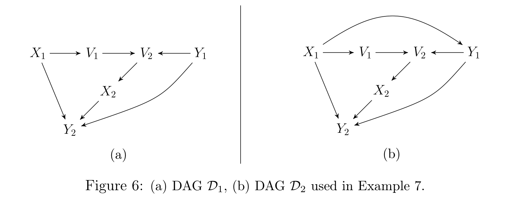
Example 7. \(\mathbf{X} = \{X_1, X_2\}\), \(\mathbf{Y} = \{Y_1, Y_2\}\)로 두고 Figure 6(a)의 \(\mathcal{D}_1\)과 6(b)의 \(\mathcal{D}_2\)를 봅시다.
\(\mathcal{D}_1\)의 경우. 적정 비인과 경로 \(X_2 \leftarrow V_2 \leftarrow Y_1\)이 Lemma 25의 (i)–(iv)를 만족합니다. 따라서 \(\mathcal{D}_1\)에는 \((\mathbf{X}, \mathbf{Y})\)에 대한 일반화 뒷문 집합이 존재하지 않습니다. 그러나 \(\{V_1, V_2\}\)는 \((\mathbf{X}, \mathbf{Y})\)에 대해 일반화 조정 기준을 만족합니다.
\(\mathcal{D}_2\)의 경우. \(\mathcal{D}_1\)과의 유일한 차이는 추가된 엣지 \(X_1 \to Y_1\)입니다. 이 엣지 때문에 \(Y_1 \in \mathrm{Forb}(\mathbf{X}, \mathbf{Y}, \mathcal{D}_2)\)가 됩니다. 그 결과 같은 적정 비인과 경로 \(X_2 \leftarrow V_2 \leftarrow Y_1\)이 이번에는 Theorem 26의 조건 (2)를 만족하게 되고, 따라서 \((\mathbf{X}, \mathbf{Y})\)에 대해 GAC를 만족하는 집합이 존재하지 않습니다. Theorem 5에 의해 조정집합도 존재하지 않습니다.
나아가 \(\mathcal{D}_2\)는 \(\mathbf{Y} \subseteq \mathrm{De}(\mathbf{X}, \mathcal{D}_2)\)인 DAG이므로 Corollary 27(ii)에 의해 \(\mathbf{X} \cap \mathrm{Forb}(\mathbf{X}, \mathbf{Y}, \mathcal{D}_2) \ne \emptyset\)이어야 하고, 실제로 \(\mathrm{Forb}(\mathbf{X}, \mathbf{Y}, \mathcal{D}_2) = \{X_2, V_2, Y_1, Y_2\}\)이므로 \(X_2\)가 그 안에 들어 있습니다.
Example 8 (Figure 7)
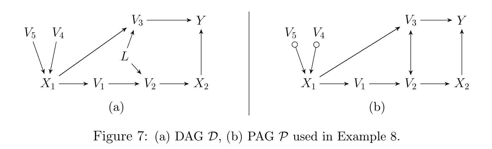
Example 8. \(\mathbf{X} = \{X_1, X_2\}\), \(\mathbf{Y} = \{Y\}\)로 두고 Figure 7(a)의 DAG \(\mathcal{D}\)와 7(b)의 PAG \(\mathcal{P}\)를 봅시다.
\(\mathcal{D}\)의 경우. \((\mathbf{X}, \mathbf{Y})\)에 대한 임의의 일반화 뒷문 집합은 반드시 \(L\)을 포함해야 합니다. 그러나 일반화 조정 기준에는 그런 요구가 없습니다. 예컨대 \(\{V_1, V_2\}\)가 \((\mathbf{X}, \mathbf{Y})\)에 대해 GAC를 만족합니다.
\(\mathcal{P}\)의 경우. \(\mathcal{P}\)는 \(L\)이 관측되지 않을 때 \(\mathcal{D}\)에 대응하는 PAG입니다. 적정 비인과 경로 \(X_2 \leftarrow V_2 \leftrightarrow V_3 \to Y\)가 Lemma 25의 (i)–(iv)를 만족하므로, \(\mathcal{P}\)에는 일반화 뒷문 집합이 존재하지 않습니다. 그럼에도 \(\{V_1, V_2\}\), \(\{V_1, V_2, V_4\}\), \(\{V_1, V_2, V_5\}\), \(\{V_1, V_2, V_4, V_5\}\)가 모두 GAC를 만족합니다.
Example 9 (Figure 8)
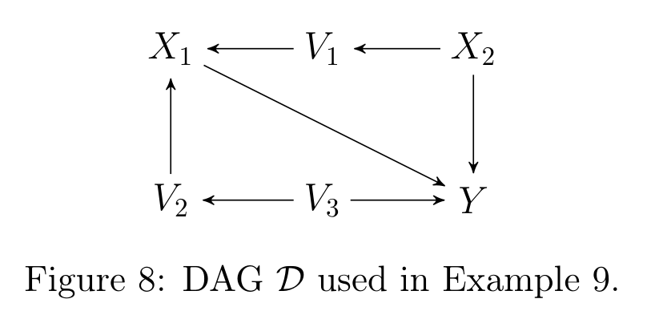
Example 9. \(\mathbf{X} = \{X_1, X_2\}\), \(\mathbf{Y} = \{Y\}\)로 두고 Figure 8의 DAG \(\mathcal{D}\)를 봅시다. 비인과 경로 \(X_1 \leftarrow V_1 \leftarrow X_2 \to Y\)가 Lemma 21의 (i)–(iv)를 만족합니다. 따라서 \(\mathcal{D}\)에서 \((\mathbf{X}, \mathbf{Y})\)에 대해 Pearl의 뒷문 기준을 만족하는 집합은 존재하지 않습니다.
그럼에도 \(\{V_2\}\), \(\{V_3\}\), \(\{V_2, V_3\}\), \(\{V_1, V_2\}\), \(\{V_1, V_3\}\), \(\{V_1, V_2, V_3\}\)가 모두 일반화 조정 기준을 만족하고, 그중 \(\{V_2\}\), \(\{V_3\}\), \(\{V_2, V_3\}\)가 일반화 뒷문 기준도 만족합니다.
원 논문의 Example 9 본문은 이 경로를 \(X_1 \leftarrow V_1 \to X_2 \to Y\)로 인쇄하고 있습니다. 그러나 Figure 8에서 \(V_1\)–\(X_2\) 엣지는 \(X_2 \to V_1\) 방향이며, Lemma 21의 조건 (iv)(“경로 위 모든 노드가 \(\mathrm{De}(\mathbf{X}, \mathcal{D})\)에 속한다”)를 만족하려면 \(V_1 \in \mathrm{De}(X_2)\)여야 하므로 그림 쪽 방향이 정합적입니다. 본 포스트는 그림에 맞추어 \(X_1 \leftarrow V_1 \leftarrow X_2 \to Y\)로 적었습니다.
6. 논의 (Discussion)
논문의 결론부는 성취와 남은 문제를 담담하게 정리합니다.
- 성취 ①: DAG, MAG, CPDAG, PAG에서 조정에 대해 건전하고 완전한 일반화 조정 기준을 유도했습니다(Definition 4, Theorem 5). 이는 실무적으로도 의미가 큽니다. 특히 CPDAG나 PAG를 관측 데이터로부터 학습하는 알고리즘과 결합할 때 그렇습니다.
- 성취 ②: 기준 자체뿐 아니라, 주어진 집합에 대해 기준을 검사하고 기준을 만족하는 모든 집합을 구성하거나 그런 집합이 없음을 알아내는 효율적 알고리즘의 모든 재료를 제공했습니다. 이로써 van der Zander et al. (2014)의 DAG · MAG 알고리즘 프레임워크가 CPDAG · PAG로 완전히 일반화됩니다.
- 자기 평가: 저자들의 표현으로, 이 논문은 “선택 변수가 없는 DAG · CPDAG · MAG · PAG에서 공변량 조정이라는 장을 닫는(closes the chapter)” 이론적 기여입니다.
남은 문제.
- 선택 변수(selection variables): Correa & Bareinboim (2017)은 선택 변수가 존재하는 잠재 투영 그래프(latent projection graph)에서의 공변량 조정에 대해 필요충분 그래프 조건을 정의했습니다. 이를 선택 변수를 갖는 MAG · PAG로 확장하는 것이 향후 과제입니다.
- 효율성(efficiency): 유효한 조정집합은 어느 것을 써도 총 인과효과의 불편(unbiased) 추정량을 주지만, 서로 다른 조정집합이 유도하는 추정량의 효율은 다릅니다(Greenland et al., 1999; Kuroki & Miyakawa, 2003; Kuroki & Cai, 2004; Hahn, 1998, 2004; Guo & Dawid, 2010; De Luna et al., 2011). 게다가 Kuroki & Miyakawa (2003)와 Kuroki & Cai (2004)는 최소 조정집합이 반드시 가장 효율적인 추정량을 주는 것은 아님을 지적합니다. 효율성 관점에서 최선의 조정집합을 정의하는 것은 여전히 열린 문제입니다.
이 마지막 문단이 던진 질문 — 어떤 조정집합이 가장 효율적인가 — 은 이후 최적 조정집합(optimal adjustment set) 연구의 출발점이 됩니다. 이 블로그에 정리해 둔 Efficient Adjustment Sets for Population Average Causal Treatment Effect Estimation in Graphical Models, Efficient adjustment sets in causal graphical models with hidden variables 같은 후속 연구들이 정확히 이 자리를 이어받습니다. 즉 본 논문은 “어떤 집합이 유효한가”라는 질문을 닫고, “유효한 집합들 중 무엇이 최선인가”라는 질문을 열어 준 셈입니다.
부록 A. 준비 (Appendix A. Preliminaries)
부록 A는 증명에 쓰일 기존 결과와 정의를 모아 둔 곳입니다. 개별 증명을 따라가려면 반드시 필요한 도구들이라, 어떤 도구가 어디에 쓰이는지 중심으로 정리하겠습니다.
A.1 추가 그래프 개념
- 인접 집합: \(\mathrm{Adj}(X, \mathcal{G})\)는 \(\mathcal{G}\)에서 \(X\)에 인접한 모든 노드의 집합입니다.
- 판별 경로(discriminating path): 경로 \(p = \langle X, \dots, Z, V, Y \rangle\)가 \(\mathcal{G}\)에서 \(V\)에 대한 \(X\)에서 \(Y\)로의 판별 경로라 함은, 적어도 네 개의 노드로 이루어지고, \(X\)와 \(Y\)가 인접하지 않으며, \(p(X, V)\) 위의 모든 비-끝점 노드가 \(p\) 위의 충돌자이면서 \(Y\)의 부모인 경우입니다.
- \(\mathbf{Z}\)로부터의 거리 (Definition 30): 경로 \(p\) 위의 모든 충돌자 \(C\)가 \(\mathbf{Z}\)로 가는 (길이 0도 허용되는) 가능 유향 경로를 가질 때, \(C\)의 \(\mathbf{Z}\)-거리를 그런 최단 경로의 길이로 정의하고, \(p\)의 \(\mathbf{Z}\)-거리를 \(p\) 위 충돌자들의 \(\mathbf{Z}\)-거리의 합으로 정의합니다. MAG에서 m-연결 경로에 대해서는 Zhang (2006, p.213)의 개념과 일치합니다.
- 모럴 그래프 (Definition 33; Lauritzen & Spiegelhalter, 1988): DAG \(\mathcal{D}\)의 모럴 그래프 \(\mathcal{D}^m\)은, \(A \notin \mathrm{Adj}(B, \mathcal{D})\)인 모든 구조 \(A \to C \leftarrow B\)에 대해 엣지 \(A - B\)를 추가한 뒤(결혼하지 않은 부모를 결혼시킴) 모든 엣지를 무향으로 바꾼 그래프입니다.
- 유도 부분그래프 (Definition 34): \(\mathcal{D}_{\mathbf{X}} = (\mathbf{X}, \mathbf{E}_{\mathbf{X}})\), 여기서 \(\mathbf{E}_{\mathbf{X}}\)는 양 끝점이 모두 \(\mathbf{X}\)에 속하는 엣지 전부입니다.
- \(\mathrm{DSEP}\) (Definition 45; Spirtes et al., 2000, p.136): DAG 또는 MAG \(\mathcal{G}\)에서 \(V \in \mathrm{DSEP}(X, Y, \mathcal{G})\)라 함은 \(V \ne X\)이고, \(X\)와 \(V\) 사이에 모든 노드가 \(X\) 또는 \(Y\)의 조상인 충돌자 경로가 존재하는 것입니다.
A.2 확률·선형대수 도구
\(\mathbf{X} = A\mathbf{X} + \boldsymbol{\epsilon}\)이라 하자. 여기서 \(A \in \mathbb{R}^{k \times k}\), \(\mathbf{X} = (X_1, \dots, X_k)^T\)이고 \(\boldsymbol{\epsilon}\)은 평균 0의 서로 독립인 오차 벡터이며 \(\mathrm{Var}(\mathbf{X}) = I\)라 하자. \(\mathcal{D} = (\mathbf{X}, \mathbf{E})\)를 대응하는 DAG(즉 \(A_{ji} \ne 0 \iff X_i \to X_j\))라 하고, \(A_{ji}\)를 엣지 \(X_i \to X_j\)의 엣지 계수라 하자. 서로 다른 두 노드 \(X_i, X_j\)에 대해 \(p_1, \dots, p_r\)을 충돌자를 포함하지 않는 모든 \(X_i\)–\(X_j\) 경로라 하면
\[ \mathrm{Cov}(X_i, X_j) = \sum_{s=1}^{r} \pi_s \]
이다. 여기서 \(\pi_s\)는 경로 \(p_s\) 위 모든 엣지 계수의 곱이다.
\(\mathbf{X} = (\mathbf{X}_1^T, \mathbf{X}_2^T)^T\)가 평균 \(\boldsymbol{\mu} = (\boldsymbol{\mu}_1^T, \boldsymbol{\mu}_2^T)^T\), 공분산 \(\Sigma = \begin{pmatrix} \Sigma_{11} & \Sigma_{12} \\ \Sigma_{21} & \Sigma_{22} \end{pmatrix}\)인 \(p\)차원 다변량 정규 벡터라 하자. 그러면
\[ E[\mathbf{X}_2 \mid \mathbf{X}_1 = \mathbf{x}_1] = \boldsymbol{\mu}_2 + \Sigma_{21}\Sigma_{11}^{-1}(\mathbf{x}_1 - \boldsymbol{\mu}_1) \]
이다.
이 두 정리는 부록 E의 완전성 증명에서 반례 밀도를 구성할 때 핵심적으로 쓰입니다. Example 1에서 “조건부 기댓값이 선형”이라고 쓴 근거가 Theorem 32이고, “\(\mathrm{Cov}(X, Y)\)가 경로 계수의 곱”이라는 계산이 Theorem 31입니다.
DAG \(\mathcal{D}\)에서 쌍마다 서로소인 \(\mathbf{X}, \mathbf{Y}, \mathbf{Z}\)에 대해, \(\mathbf{Z}\)가 \(\mathcal{D}\)에서 \(\mathbf{X}\)와 \(\mathbf{Y}\)를 d-분리한다는 것은, 모럴화된 유도 부분그래프 \(\left(\mathcal{D}_{\mathrm{An}(\mathbf{X} \cup \mathbf{Y} \cup \mathbf{Z}, \mathcal{D})}\right)^m\)에서 \(\mathbf{X}\)와 \(\mathbf{Y}\) 사이의 모든 경로가 \(\mathbf{Z}\)의 노드를 적어도 하나 포함하는 것과 동치이다.
A.3 그래프 보조정리 (Lemmas 36–44)
이 보조정리들은 CPDAG·PAG의 국소 구조가 가질 수 있는 형태를 제약하며, §3–§5의 증명 전반에서 쓰입니다.
| 보조정리 | 내용 요약 |
|---|---|
| Lemma 36 (Meek, 1995; Zhang, 2006) | CPDAG·PAG에서 \(X \ast\!\!\to Y \circ\!\!-\!\!\ast\, Z\)이면 \(X\)와 \(Z\) 사이에 \(Z\)쪽 화살촉을 갖는 엣지가 존재한다. 나아가 \(X \to Y\)이면 그 엣지는 \(X \circ\!\!\to Z\) 또는 \(X \to Z\)이다(즉 \(X \leftrightarrow Z\)가 아니다). |
| Lemma 37 (Richardson, 2003) | DAG·MAG에서, 비충돌자가 \(\mathbf{Z}\)에 없고 모든 충돌자가 \(\mathrm{An}(\mathbf{X} \cup \mathbf{Y} \cup \mathbf{Z}, \mathcal{G})\)에 속하는 경로가 있으면, \(\mathbf{Z}\) 하에 m-연결하는 경로가 존재한다. |
| Lemma 38 (Zhang, 2006) | MAG의 판별 경로에서, \(p(X, V)\)에 대응하는 PAG의 경로도 충돌자 경로이면, \(p\)에 대응하는 PAG의 경로도 판별 경로이다. |
| Lemma 39 (Zhang, 2006) | MAG(DAG)에서 \(\mathbf{Z}\) 하에 m-연결하는 최단 경로에 대응하는 PAG(CPDAG)의 경로는 확정 상태 경로이다. |
| Lemma 40 (Zhang, 2006) | 위의 최단 경로 중 \(\mathbf{Z}\)-거리가 최소인 것을 고르면, 대응 경로는 확정 상태이면서 \(\mathbf{Z}\) 하에 m-연결한다. |
| Lemma 41 (Zhang, 2008b) | CPDAG·PAG에서 \(X\)에서 \(Y\)로 가는 가능 유향 경로가 있으면, 그 부분수열 중 하나가 비차폐 가능 유향 경로를 이룬다. |
| Lemma 42 (Zhang, 2008b; Maathuis & Colombo, 2015) | 비차폐 가능 유향 경로 \(\langle X = V_0, \dots, V_k = Y \rangle\)에서 어떤 \(i\)에 대해 \(V_{i-1} \ast\!\!\to V_i\)이면, 그 이후의 모든 엣지가 확정된 유향 엣지 \(V_{j-1} \to V_j\)이다. |
| Lemma 43 (Zhang, 2008b; Maathuis & Colombo, 2015) | PAG(CPDAG) \(\mathcal{G}\)에 대해, (1) 모든 \(\circ\!\!\to\)를 \(\to\)로 바꾸고 (2) \(\circ\!\!-\!\!\circ\)로 이루어진 부분그래프를 비차폐 충돌자가 생기지 않는 DAG로 방향화하면 그 결과는 \([\mathcal{G}]\)에 속한다. 게다가 임의의 노드 \(X\)에 대해 \(X\)로 들어오는 새 엣지를 만들지 않는 방향화를 항상 찾을 수 있다. |
| Lemma 44 (Maathuis & Colombo, 2015) | \(\mathcal{G}\)는 \(X\)에서 \(Y\)로 가는 가능 유향 경로와 \(Y \ast\!\!\to X\) 형태의 엣지를 동시에 가질 수 없다. |
§3.8의 Theorem 5 증명, §4.4의 Theorem 14 증명, §4.5의 구현 절차 (3)단계가 모두 Lemma 43에 의존합니다. “PAG를 하나의 MAG로 방향화한다”는 조작이 정당하려면, 그 결과가 정말 동치류 안에 있어야 하고 게다가 \(X\)의 인접 구조를 망가뜨리지 않아야 하는데, 그 두 가지를 동시에 보장해 주는 것이 이 보조정리입니다.
A.4 do-계산법의 세 규칙 (A.1절)
부록 E의 증명에서 실제로 계산에 쓰이는 도구입니다. 인과 DAG \(\mathcal{D}\)에서 쌍마다 서로소인 (비어 있어도 되는) 집합 \(\mathbf{X}', \mathbf{Y}', \mathbf{Z}', \mathbf{W}'\)를 생각합니다. \(\mathcal{D}_{\overline{\mathbf{X}'}}\)는 \(\mathbf{X}'\)로 들어오는 엣지를 모두 지운 그래프, \(\mathcal{D}_{\underline{\mathbf{X}'}}\)는 \(\mathbf{X}'\)에서 나가는 엣지를 모두 지운 그래프입니다.
규칙 1 (관측의 삽입/삭제). \(\mathcal{D}_{\overline{\mathbf{X}'}}\)에서 \(\mathbf{Y}' \perp_d \mathbf{Z}' \mid \mathbf{X}' \cup \mathbf{W}'\)이면
\[ f(\mathbf{y}' \mid do(\mathbf{x}'), \mathbf{w}') = f(\mathbf{y}' \mid do(\mathbf{x}'), \mathbf{z}', \mathbf{w}') \tag{4} \]
규칙 2 (행위/관측의 교환). \(\mathcal{D}_{\overline{\mathbf{X}'}\underline{\mathbf{Z}'}}\)에서 \(\mathbf{Y}' \perp_d \mathbf{Z}' \mid \mathbf{X}' \cup \mathbf{W}'\)이면
\[ f(\mathbf{y}' \mid do(\mathbf{x}'), do(\mathbf{z}'), \mathbf{w}') = f(\mathbf{y}' \mid do(\mathbf{x}'), \mathbf{z}', \mathbf{w}') \tag{5} \]
규칙 3 (행위의 삽입/삭제). \(\mathcal{D}_{\overline{\mathbf{X}' \cup \mathbf{Z}'(\mathbf{W}')}}\)에서 \(\mathbf{Y}' \perp_d \mathbf{Z}' \mid \mathbf{X}' \cup \mathbf{W}'\)이면
\[ f(\mathbf{y}' \mid do(\mathbf{x}'), \mathbf{w}') = f(\mathbf{y}' \mid do(\mathbf{x}'), do(\mathbf{z}'), \mathbf{w}') \tag{6} \]
여기서 \(\mathbf{Z}'(\mathbf{W}')\)는 \(\mathcal{D}_{\overline{\mathbf{X}'}}\)에서 \(\mathbf{W}'\)의 어떤 노드의 조상도 아닌 \(\mathbf{Z}'\)-노드들의 집합이며, \(\mathbf{W}' = \emptyset\)이면 \(\mathbf{Z}'(\mathbf{W}') = \mathbf{Z}'\)입니다.
A.5 FCI 방향 결정 규칙 (A.2절)
PAG \(\mathcal{P}\)에서 서로 다른 노드 \(A, B, C, D\)에 대해, Spirtes et al. (2000, p.183)이 정의한 FCI 알고리즘의 처음 네 개 방향 결정 규칙입니다.
R1 A *→ B ∘−* C 이고 A 와 C 가 인접하지 않으면
→ 삼중항 ⟨A, B, C⟩ 를 A *→ B → C 로 방향 결정
R2 A → B *→ C 또는 A *→ B → C 이고 A ∘−* C 이면
→ A ∘−* C 를 A *→ C 로 방향 결정
R3 A *→ B ←* C, A ∘−* D ∘−* C, A 와 C 가 인접하지 않고, D ∘−* B 이면
→ D ∘−* B 를 D *→ B 로 방향 결정
R4 ⟨D, ..., A, B, C⟩ 가 B 에 대한 D→C 판별 경로이고 B ∘−* C 이면
→ B 가 D 와 C 의 분리집합에 있으면 B ∘−* C 를 B → C 로,
그렇지 않으면 삼중항 ⟨A, B, C⟩ 를 A ↔ B ↔ C 로 방향 결정이 네 규칙은 Spirtes et al. (2000)에서 건전함이 증명되었습니다. 즉 이 규칙들이 결정한 엣지 마크는 참 인과 MAG에 대한 최대 정보 PAG에서의 불변 마크와 일치합니다. Zhang (2008b)은 여섯 개의 규칙을 추가했고, 열 개 규칙을 모두 갖춘 증강 FCI 알고리즘이 건전하고 완전함을 증명했습니다.
DAG, CPDAG, MAG, PAG \(\mathcal{G}\)에서 서로 다른 노드 \(X, Y\)를 생각하고, \(\mathcal{R}\)과 \(\mathcal{R}_X\)를 Definition 46과 같이 두자(즉 \(\mathcal{R}\)은 \(\mathcal{G}\)가 표현하는 DAG/MAG 중 \(X\)로 들어오는 엣지 수가 같은 것, \(\mathcal{R}_X\)는 \(\mathcal{R}\)에서 \(\mathcal{G}\)에서 가시적인 \(X\)의 나가는 유향 엣지를 모두 제거한 그래프). 그러면
\[ \exists\, \text{일반화 뒷문 집합} \iff Y \notin \mathrm{Adj}(X, \mathcal{R}_X) \ \text{ 이고 } \ \mathrm{DSEP}(X, Y, \mathcal{R}_X) \cap \mathrm{PossDe}(X, \mathcal{G}) = \emptyset \]
이며, 존재한다면 \(\mathrm{DSEP}(X, Y, \mathcal{R}_X)\)가 하나의 일반화 뒷문 집합이다.
부록 B. 3절의 증명 (Appendix B. Proofs for Section 3)
부록 B는 Lemmas 8, 9, 10을 증명하며, 그 과정에서 다섯 개의 보조정리(Lemmas 48–52)를 세웁니다. 전체 구조는 아래 그림에 요약되어 있습니다.
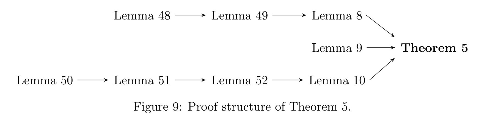
B.1 순응성 갈래 (Lemmas 48–49)
PAG \(\mathcal{P}\)의 노드 \(X\)와, Lemma 43을 만족하는 MAG \(\mathcal{M} \in [\mathcal{P}]\)를 생각하자. 그러면 \(\mathcal{P}\)에서 \(X \circ\!\!-\!\!\circ Y\), \(X \circ\!\!\to Y\), 또는 비가시적 \(X \to Y\)인 엣지는 모두 \(\mathcal{M}\)에서 비가시적 \(X \to Y\)이다.
증명의 골격. Lemma 43의 방향화에서 위 세 형태의 엣지는 모두 \(\mathcal{M}\)의 \(X \to Y\)에 대응합니다. 남은 것은 그것이 \(\mathcal{M}\)에서 비가시적임을 보이는 일입니다. 귀류법으로 \(X \to Y\)가 \(\mathcal{M}\)에서 가시적이라 하면, 가시성 정의에 의해 \(Y\)에 인접하지 않은 노드 \(D\)가 존재하여 (1) \(D \ast\!\!\to X\)가 \(\mathcal{M}\)에 있거나, (2) \(X\)로 들어오는 충돌자 경로 \(\langle D, D_1, \dots, D_k, X \rangle\)가 있고 각 \(D_i\)가 \(\mathcal{M}\)에서 \(X\)의 부모입니다. 두 경우 모두 \(\mathcal{M}\)의 선택(Lemma 43은 \(X\)로 들어오는 새 엣지를 만들지 않음)과 Lemma 36, Lemma 38 등을 이용해 \(\mathcal{P}\)에서도 같은 구조가 존재함을 이끌어내고, 그러면 원래 엣지가 \(\mathcal{P}\)에서 가시적이어야 하므로 모순에 도달합니다.
PAG \(\mathcal{P}\)에서 서로 다른 노드 \(X, Y\)에 대해, \(X\)에서 \(Y\)로 가는 가능 유향 경로 \(p^\ast\)가 \(X\)에서 나가는 가시적 엣지로 시작하지 않는다고 하자. 그러면 \(\mathcal{P}\)에 대응하는 어떤 MAG \(\mathcal{M} \in [\mathcal{P}]\)가 존재하여, \(p^\ast\)와 같은 노드 나열로 이루어진 \(\mathcal{M}\)의 경로 \(p\)가 비가시적 엣지로 시작하는 \(X \to Y\) 유향 경로를 부분수열로 포함한다. 즉 \(\mathcal{M}\)이 \((X, Y)\)에 대해 순응성 조건을 위배한다.
증명의 골격. Lemma 43을 만족하는 \(\mathcal{M} \in [\mathcal{P}]\)를 잡습니다. \(p^\ast\)의 부분수열 중 가시적 엣지로 시작하지 않는 가능 유향 경로가 되는 가장 짧은 것을 \(p'^\ast\)로 두고(Lemma 41이 이런 부분수열의 존재를 보장), Lemma 42와 Lemma 48을 적용하면 \(\mathcal{M}\)에서 대응 경로가 비가시적 엣지로 시작하는 유향 경로임이 따릅니다.
Lemma 8은 Lemmas 48–49로부터 따라옵니다. 순응적인 PAG의 모든 MAG가 순응적이라는 것이 첫 부분이고, 순응성이 깨지면 Lemma 49가 순응적이지 않은 MAG를 실제로 구성해 주므로 그 MAG에서 조정집합이 없고 따라서 \(\mathcal{P}\)에서도 없다는 것이 둘째 부분입니다.
B.2 차단 갈래 (Lemmas 50–52)
이 세 보조정리는 “MAG(DAG)의 m-연결 경로를 PAG(CPDAG)의 확정 상태 m-연결 경로로 끌어올리는” 사다리를 이룹니다.
PAG(CPDAG) \(\mathcal{P}\)가 \((\mathbf{X}, \mathbf{Y})\)에 대해 순응적이고 \(\mathbf{Z}\)가 금지 집합 조건을 만족한다고 하자. \(\mathcal{M} \in [\mathcal{P}]\)이고 \(p = \langle X = V_0, V_1, \dots, V_n = Y \rangle\) (\(n \ge 2\))가 \(\mathcal{M}\)에서 \(\mathbf{Z}\) 하에 m-연결하는 적정 비인과 경로이며, \(p^\ast\)가 \(\mathcal{P}\)의 대응 경로라 하자. 그러면:
- (i) \(0 < i < j \le n\)에 대해 \(\mathcal{P}\)에 엣지 \(\langle V_i, V_j \rangle\)가 있으면, \(p^\ast(X, V_i) \oplus \langle V_i, V_j \rangle \oplus p^\ast(V_j, Y)\)는 적정 비인과 경로이다. 특히 \(j = i+1\)이면 \(p^\ast\) 자체가 적정 비인과 경로이다.
- (ii) \(V_1\)이 \(p^\ast\) 위에서 확정 상태가 아니면, \(\langle X, V_2 \rangle \oplus p^\ast(V_2, Y)\)가 존재하며 적정 비인과 경로이다.
- (iii) \(n \ge 3\)이고 \(V_k\)(\(2 \le k < n\))가 확정 상태가 아니며 \(p^\ast(X, V_k)\)의 모든 비-끝점 노드가 \(p^\ast\) 위 충돌자이자 \(\mathcal{M}\)에서 \(V_{k+1}\)의 부모이면, \(\langle X, V_{k+1} \rangle \oplus p^\ast(V_{k+1}, Y)\)가 존재하며 적정 비인과 경로이다.
Lemma 50과 같은 설정에서, \(p\)가 \(\mathcal{M}\)에서 \(\mathbf{Z}\) 하에 m-연결하는 가장 짧은 적정 비인과 경로이면, 대응 경로 \(p^\ast\)는 \(\mathcal{P}\)에서 적정 확정 상태 비인과 경로이다.
Lemma 51의 설정에서, \(p\)를 \(\mathbf{Z}\) 하에 m-연결하는 최단 적정 비인과 경로들 중 \(\mathbf{Z}\)-거리가 최소인 것으로 잡으면, 대응 경로 \(p^\ast\)는 \(\mathcal{P}\)에서 \(\mathbf{Z}\) 하에 m-연결하는 적정 확정 상태 비인과 경로이다.
이 사다리의 각 칸은 잃어버리기 쉬운 성질을 하나씩 되찾는 과정입니다.
- Lemma 50: 대응 경로가 적정 비인과임을 확보 (그러나 확정 상태는 아직 미보장)
- Lemma 51: 경로를 최단으로 잡으면 확정 상태까지 확보 (Zhang, 2006의 Lemma 1에 대응)
- Lemma 52: 나아가 \(\mathbf{Z}\)-거리도 최소로 잡으면 m-연결까지 확보 (Zhang, 2006의 Lemma 2에 대응)
세 칸을 다 오르면 “MAG에서 차단이 깨졌다면 PAG에서도 깨졌다”는 Lemma 10의 (iii) \(\Rightarrow\) (i) 방향이 완성됩니다. 그리고 이 방향이야말로 §4.5의 알고리즘이 아무 MAG 하나만 봐도 되는 이유입니다.
부록 C. 4절의 증명 (Appendix C. Proofs for Section 4)
부록 C는 Theorem 11, Lemma 16, Lemma 17의 증명을 담습니다.
- Theorem 11의 증명: \(\mathbf{X} \setminus \mathbf{X}'\)의 노드들이 \(\mathbf{Y}\)로 가는 적정 가능 유향 경로를 갖지 않으므로, do-계산법 규칙 3에 의해 그들에 대한 개입을 삭제할 수 있습니다. 이어서 \(\mathbf{Z}\)가 \((\mathbf{X}, \mathbf{Y})\)에 대해 GAC를 만족하면 \((\mathbf{X}', \mathbf{Y})\)에 대해서도 만족함을 세 조건별로 확인합니다.
- Lemma 16의 증명: \(\mathrm{Adjust} \setminus \mathbf{I}\) 하에 m-연결하는 경로가 있다고 가정하고, 그중 적당한 것을 골라 (i)–(iv)를 차례로 확인합니다.
- (ii): \(p\)가 \(\mathrm{Adjust} \setminus \mathbf{I}\) 하에 m-연결하므로 모든 충돌자가 그 집합의 조상이고, \(\mathrm{Adjust}\)의 정의(조상 집합)에 의해 충돌자 자신이 그 집합에 속합니다.
- (iii): \(p\) 위의 임의의 확정적 비충돌자는 끝점의 가능한 조상이면서 m-연결 조건상 \(\mathrm{Adjust} \setminus \mathbf{I}\)에 속할 수 없으므로 \(\mathbf{I}\)에 속합니다.
- (iv): 충돌자 \(C\)가 \(\mathrm{Adjust}\)에 속하면 \(C \in \mathrm{PossAn}(\mathbf{X} \cup \mathbf{Y})\)이고, Lemma 41에 의해 그 가능 유향 경로의 부분수열 중 비차폐인 것이 존재합니다.
- Lemma 17의 증명: Richardson (2003)의 Lemma 1(부록 A의 Lemma 37)과 같은 논법이되, \(\mathbf{I}\)라는 추가 제약을 함께 유지한다는 점이 다릅니다. 즉 경로를 재구성하는 과정에서 새로 등장하는 노드들이 \(\mathbf{I}\)를 침범하지 않도록 관리합니다.
이 두 보조정리가 §4.4에서 본 Theorem 14의 귀류법 논증을 지탱합니다.
부록 D. 5절의 증명 (Appendix D. Proofs for Section 5)
부록 D는 Lemmas 21, 23, 25, Corollaries 22, 24, 27, 28, 29, Theorem 26의 증명과, 다음 따름정리를 담습니다.
DAG, CPDAG, MAG, PAG \(\mathcal{G}\)에서 서로 다른 노드 \(X, Y\)를 생각하고 \(\mathcal{R}_X\)를 Definition 46과 같이 두자. \((X, Y)\)에 대한 일반화 뒷문 집합이 존재하면
\[ \mathrm{DSEP}(X, Y, \mathcal{R}_X) \subseteq \mathrm{Adjust}(X, Y, \mathcal{G}) \setminus \mathrm{PossDe}(X, \mathcal{G}) \]
이다.
증명. 일반화 뒷문 집합이 존재하므로 Theorem 47에 의해 \(\mathrm{DSEP}(X, Y, \mathcal{R}_X) \subseteq \mathrm{PossAn}(X \cup Y, \mathcal{G}) \setminus (\mathrm{PossDe}(X, \mathcal{G}) \cup Y)\)가 하나의 일반화 뒷문 집합입니다. 한편 Corollary 24에 의해 \(\mathrm{Adjust}(X, Y, \mathcal{G}) \setminus \mathrm{PossDe}(X, \mathcal{G})\)도 일반화 뒷문 집합이며, 이 집합은 정확히 \(\mathrm{PossAn}(X \cup Y, \mathcal{G}) \setminus (\mathrm{PossDe}(X, \mathcal{G}) \cup Y)\)와 같습니다. \(\square\)
이것이 §5.2에서 말한 “\(|\mathbf{X}| = 1\)일 때 이 논문의 구성적 집합은 Maathuis & Colombo (2015)의 집합의 상위집합”이라는 주장의 근거입니다.
Lemma 25의 증명 방향 하나만 짚어 두겠습니다. (i)–(iv)를 만족하는 경로 \(p\)가 있으면, \(p\)는 \(\mathrm{Adjust}(\mathbf{X}, \mathbf{Y}, \mathcal{G}) \setminus \mathrm{PossDe}(\mathbf{X}, \mathcal{G})\) 하에 m-연결하는 적정 확정 상태 비인과 경로입니다. 따라서 그 집합이 차단 조건을 위배하고, Theorem 14(with \(\mathbf{I} = \mathrm{PossDe}(\mathbf{X}, \mathcal{G})\))에 의해 \(\mathbf{Z} \cap \mathrm{PossDe}(\mathbf{X}, \mathcal{G}) = \emptyset\)인 조정집합 \(\mathbf{Z}\)가 존재하지 않습니다.
부록 E. DAG에 대한 조정 기준 (Appendix E. Adjustment Criterion for DAGs)
이 절은 논문의 나머지와 독립적으로 읽을 수 있습니다. Shpitser (2012)와 van der Zander et al. (2014)의 조정 기준(Definition 55)에 대한 건전성·완전성 증명을 제공하며, 주 결과는 Theorem 56입니다. 증명이 DAG로 제한되므로, 먼저 DAG판 정의를 따로 씁니다(각각 Definition 1과 Definition 4의 특수 경우입니다).
Definition 54 (조정집합; Pearl, 2009, Ch. 3.3.1). 인과 DAG \(\mathcal{D}\)에서 쌍마다 서로소인 \(\mathbf{X}, \mathbf{Y}, \mathbf{Z}\)에 대해, \(\mathcal{D}\)와 정합적인 임의의 밀도 \(f\)에서
\[ f(\mathbf{y} \mid do(\mathbf{x})) = \begin{cases} f(\mathbf{y} \mid \mathbf{x}), & \mathbf{Z} = \emptyset \\[4pt] \displaystyle\int_{\mathbf{z}} f(\mathbf{y} \mid \mathbf{x}, \mathbf{z}) f(\mathbf{z})\, d\mathbf{z}, & \text{그 외} \end{cases} \]
가 성립하면 \(\mathbf{Z}\)를 \((\mathbf{X}, \mathbf{Y})\)에 대한 조정집합이라 한다.
Definition 55 (조정 기준; cf. Shpitser, 2012; van der Zander et al., 2014). DAG \(\mathcal{D}\)에서 \(\mathrm{Forb}(\mathbf{X}, \mathbf{Y}, \mathcal{D})\)를 \(\mathbf{X}\)에서 \(\mathbf{Y}\)로 가는 적정 인과 경로 위의 \(\mathbf{X}\) 아닌 노드 \(W\)의 모든 후손의 집합이라 하자. \(\mathbf{Z}\)가 \((\mathbf{X}, \mathbf{Y})\)에 대해 조정 기준을 만족한다는 것은 다음 두 조건이 성립하는 것이다.
- (금지 집합) \(\mathbf{Z} \cap \mathrm{Forb}(\mathbf{X}, \mathbf{Y}, \mathcal{D}) = \emptyset\)
- (차단) \(\mathbf{X}\)에서 \(\mathbf{Y}\)로 가는 모든 적정 비인과 경로가 \(\mathbf{Z}\)에 의해 차단된다
DAG에서는 모든 유향 엣지가 가시적이므로 순응성 조건이 자동으로 만족되어, 세 조건이 두 조건으로 줄어듭니다.
Definition 55는 van der Zander et al. (2014)에서 도입된 형태로, Shpitser (2012)의 정의와 금지 집합 조건에서 \(\mathcal{D}\)를 쓰느냐 \(\mathcal{D}_{\overline{\mathbf{X}}}\)를 쓰느냐만 다릅니다(\(\mathcal{D}_{\overline{\mathbf{X}}}\)는 \(\mathbf{X}\)로 들어오는 엣지를 모두 제거한 그래프). 두 형식은 동치임이 van der Zander et al. (2014)의 Remark 4.3에서 밝혀졌습니다. 그러나 개정된 기준에 대한 출판된 건전성·완전성 증명이 없었고, 이 논문의 주 결과가 그 위에 세워져 있기 때문에 저자들은 증명을 직접 제공하는 쪽을 택했습니다.
인과 DAG \(\mathcal{D} = (\mathbf{V}, \mathbf{E})\)에서 쌍마다 서로소인 \(\mathbf{X}, \mathbf{Y}, \mathbf{Z}\)를 생각하자. 그러면
\[ \mathbf{Z} \text{ 가 조정 기준(Definition 55)을 만족} \iff \mathbf{Z} \text{ 가 조정집합(Definition 54)} \]
이다.
Theorem 56은 Theorem 57(완전성)과 Theorem 58(건전성)로부터 곧바로 따라옵니다.
E.1 완전성 (Theorem 57)
인과 DAG \(\mathcal{D}\)에서 쌍마다 서로소인 \(\mathbf{X}, \mathbf{Y}, \mathbf{Z}\)를 생각하자. \(\mathbf{Z}\)가 \((\mathbf{X}, \mathbf{Y})\)에 대해 조정 기준을 만족하지 않으면, \(\mathcal{D}\)와 정합적인 어떤 밀도 \(f\)가 존재하여
\[ f(\mathbf{y} \mid do(\mathbf{x})) \ne \int_{\mathbf{z}} f(\mathbf{y} \mid \mathbf{x}, \mathbf{z}) f(\mathbf{z})\, d\mathbf{z} \]
이다.
증명 전략은 명확합니다. 반례 밀도를 손으로 만드는 것입니다.
- 가우시안 선형 SEM을 씁니다. 각 변수 \(A \in \mathbf{V}\)를 그 부모들의 선형 결합 + 평균 0, 고정 분산의 가우시안 잡음 \(\epsilon_A\)로 두고, 잡음들은 서로 독립이라고 둡니다.
- 이 모형은 노드당 하나의 수(잔차 분산)와 엣지당 하나의 수(엣지 계수)로 완전히 매개변수화됩니다.
- 어떤 노드 \(Y \in \mathbf{Y}\)에 대해 \(E[Y \mid do(X = 1)] \ne \int_{\mathbf{z}} E[Y \mid X = 1, \mathbf{z}] f(\mathbf{z}) d\mathbf{z}\)임을 보이면 충분합니다.
위배의 유형을 먼저 분류합니다. \(\mathbf{Z}\)가 조정 기준을 만족하지 않으면, 금지 집합 조건 또는 차단 조건 중 하나가 깨집니다.
1. 금지 집합 조건 위배: \(X \in \mathbf{X}\)에서 \(Y \in \mathbf{Y}\)로 가는 적정 인과 경로 \(\langle X, V_1, \dots, V_k = Y \rangle\) (\(k \ge 1\))와 \(Z \in \mathbf{Z}\)가 존재하여
- (a) \(Z = V_i\) (어떤 \(i \in \{1, \dots, k-1\}\)) — 매개변수 자체를 조정
- (b) \(Z \in \mathrm{De}(Y, \mathcal{D})\) — 결과의 후손을 조정
- (c) \(Z \in \mathrm{De}(V_i, \mathcal{D}) \setminus \{V_1, \dots, V_{k-1}\}\) (어떤 \(i\)) — 매개변수의 후손을 조정
2. 차단 조건 위배: \(\mathbf{Z}\) 하에 d-연결하는 적정 비인과 경로가 존재하여
- (a) 그 경로에 충돌자가 없거나
- (b) 그 경로에 충돌자가 적어도 하나 있다
증명은 이 경우들을 (i) 2(a) → (ii) 1(a) → (iii) 1(b) → (iv) 1(c) → (v) 2(b) 순서로, 앞의 경우가 발생하지 않는다는 가정을 누적하며 체계적으로 다룹니다.
경우 (i): 충돌자 없는 열린 비인과 경로 (2(a))
경로 \(p\)가 충돌자 없는 적정 비인과 경로이므로 \(p\)는 \(X\)로 들어오는 엣지로 시작합니다. 즉 \(p\)는 \(X \leftarrow \cdots Y\) 형태입니다.
- \(p\) 위의 엣지 계수만 \((0, 1)\)의 값으로 두고 나머지를 전부 0으로 둡니다. 모든 변수의 분산이 1이 되도록 잔차 분산을 고를 수 있을 만큼 계수를 작게 잡습니다.
- 이렇게 얻은 밀도 \(f\)는 \(\mathcal{D}\)와도, \(p\) 위 엣지만 남긴 DAG \(\mathcal{D}'\)와도 정합적입니다.
- \(\mathcal{D}'_{\overline{\mathbf{X}}}\)에서 \(Y \perp_d \mathbf{X}\)이므로 do-계산법 규칙 3(식 (6), \(\mathbf{X}' = \emptyset\), \(\mathbf{W}' = \emptyset\), \(\mathbf{Z}' = \mathbf{X}\), \(\mathbf{Y}' = \{Y\}\))에 의해 \(E[Y \mid do(X = 1)] = E[Y] = 0\).
- 한편 \(p\)가 적정이므로 \(\mathbf{X} \setminus \{X\}\)의 어떤 노드도 \(p\) 위에 없고, \(p\)가 \(\mathbf{Z}\) 하에 d-연결하며 충돌자가 없으므로 \(\mathbf{Z}\)의 어떤 노드도 \(p\) 위에 없습니다. 따라서 \(\mathcal{D}'\)에서 \(Y \perp_d \mathbf{Z} \cup \mathbf{X} \setminus \{X\} \mid X\)이고
\[ \int_{\mathbf{z}} E[Y \mid X = 1, \mathbf{z}] f(\mathbf{z}) d\mathbf{z} = E[Y \mid X = 1] \overset{\text{Thm 32}}{=} \mathrm{Cov}(X, Y) \overset{\text{Thm 31}}{=} a \]
여기서 \(a\)는 \(p\) 위 모든 엣지 계수의 곱이며 \(a \ne 0\)입니다. 좌변 \(0\)과 다르므로 반례가 완성됩니다.
경우 (ii): 매개변수를 조정 (1(a))
\(p\) 위의 \(\mathbf{Z}\)-노드들의 집합을 \(\tilde{\mathbf{Z}}\)라 둡니다. 같은 방식으로 SEM을 구성하면:
- do-계산법 규칙 3으로 결합 개입을 단일 개입으로 줄이고(\(E[Y \mid do(\mathbf{X} = 1)] = E[Y \mid do(X = 1)]\)),
- 규칙 2로 개입을 관측으로 바꾸어 \(E[Y \mid do(X = 1)] = E[Y \mid X = 1] = \mathrm{Cov}(X, Y) = a \ne 0\)을 얻습니다.
- 반면 \(\tilde{\mathbf{Z}}\)가 인과 경로 \(p\)를 막고 있으므로 \(Y \perp_d \mathbf{X} \cup (\mathbf{Z} \setminus \tilde{\mathbf{Z}}) \mid \tilde{\mathbf{Z}}\)이고, 조정 공식의 우변은 \(E[Y] = 0\)이 됩니다.
경우 (iii): 결과의 후손을 조정 (1(b))
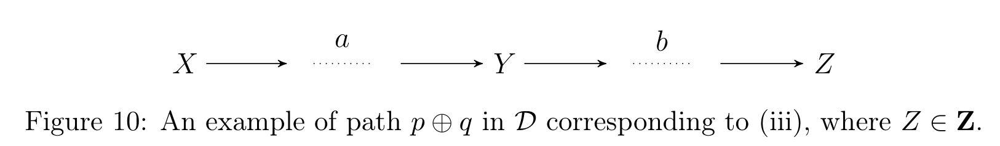
- \(\mathbf{Z}\)의 원소 중 \(Y\)로부터의 인과 경로 \(q\)가 가장 짧은 \(Z\)를 고릅니다.
- 그러면 \(Y\)는 \(p\)와 \(q\) 양쪽에 있는 유일한 노드입니다. 그렇지 않으면 \(\mathcal{D}\)에 순환이 생기기 때문입니다.
- 따라서 \(p \oplus q\)는 \(X\)에서 \(Z\)로 가는, \(Y\)를 지나는 인과 경로입니다(Figure 10).
- \(p \oplus q\) 위의 엣지 계수만 살린 SEM으로 같은 방식의 계산을 수행하면 반례가 얻어집니다.
경우 (iv): 매개변수의 후손을 조정 (1(c))
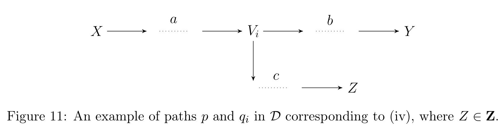
- \(p\) 위의 노드 중 \(\mathbf{Z}\)까지 가장 짧은 인과 경로를 갖는 \(V_i\)를 고르고, 그 최단 경로를 \(q_i\)라 합니다.
- 그러면 \(V_i\) 외에는 \(p\)와 \(q_i\)에 동시에 놓인 노드가 없습니다. 있었다면 다른 \(V_i\)를 골랐을 것이기 때문입니다(Figure 11).
- \(p\)와 \(q_i\) 위의 계수만 살린 SEM을 구성하고, 앞선 경우들이 발생하지 않는다는 가정(2(a), 1(a), 1(b) 부재)을 이용해 do-계산법 규칙 3과 규칙 2를 차례로 적용하면 좌변과 우변이 달라짐을 보입니다.
경우 (v): 충돌자를 갖는 열린 비인과 경로 (2(b))
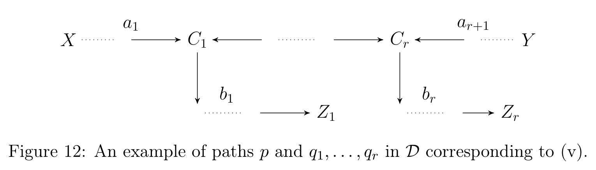
- 앞의 네 경우가 모두 발생하지 않는다고 가정합니다. \(\mathbf{Z}\) 하에 d-연결하는 적정 비인과 경로 중 충돌자 수가 가장 적은 \(p\)를 고릅니다. 2(a)가 발생하지 않으므로 \(p\)에는 충돌자가 적어도 하나 있습니다.
- \(C_1, \dots, C_r\) (\(r \ge 1\))을 \(X\)에 가까운 순서로 나열한 \(p\) 위의 모든 충돌자라 합시다. \(p\)가 \(\mathbf{Z}\) 하에 d-연결하므로 모든 \(C_i \in \mathrm{An}(\mathbf{Z}, \mathcal{D})\)입니다.
- 각 \(i\)에 대해 \(C_i\)에서 \(\mathbf{Z}\)로 가는 최단 경로(길이 0 허용)를 \(q_i\)라 하고, \(q_1, \dots, q_r\)의 끝점인 \(\mathbf{Z}\)-노드들의 모임을 \(\tilde{\mathbf{Z}}\)라 둡니다(Figure 12).
- \(p, q_1, \dots, q_r\) 위의 계수만 살린 SEM을 구성합니다. 증명의 핵심 논증은 \(p\)가 충돌자 수 최소라는 선택이 모순을 낳지 않도록 \(q_i\)들이 \(p\)와 어떻게 만날 수 있는지를 case-by-case로 배제하는 것입니다. 어떤 노드 \(D\)가 \(q_i\) 위에 있으면서 \(p\) 위에도 있으면, \(p' = p(X, C_i) \oplus q_i(C_i, D) \oplus p(D, Y)\) 같은 경로를 만들어 \(p\)보다 충돌자가 적으면서 여전히 d-연결하는 적정 비인과 경로를 얻게 되어 최소성에 모순됩니다.
- 이렇게 \(q_i\)들이 \(p\)와 \(C_i\) 외에서 만나지 않음을 확보한 뒤, Wright의 규칙으로 좌·우변을 계산하면 둘이 다름을 보일 수 있습니다. \(\square\)
E.2 건전성 (Theorem 58)
인과 DAG \(\mathcal{D}\)에서 쌍마다 서로소인 \(\mathbf{X}, \mathbf{Y}, \mathbf{Z}_0\)를 생각하자. \(\mathbf{Z}_0\)가 조정 기준(Definition 55)을 만족하면, \(\mathbf{Z}_0\)는 조정집합(Definition 54)이다.
증명의 골격은 다음과 같습니다. \(\mathcal{D}\)와 정합적인 밀도 \(f\)에 대해
\[ f(\mathbf{y} \mid do(\mathbf{x})) = \int_{\mathbf{z}_0} f(\mathbf{y} \mid \mathbf{x}, \mathbf{z}_0) f(\mathbf{z}_0)\, d\mathbf{z}_0 \tag{9} \]
를 보여야 합니다.
1단계 (결과를 두 조각으로 나눈다). \(\mathbf{Y}_D = \mathbf{Y} \cap \mathrm{De}(\mathbf{X}, \mathcal{D})\), \(\mathbf{Y}_N = \mathbf{Y} \setminus \mathrm{De}(\mathbf{X}, \mathcal{D})\)로 둡니다. \(\mathcal{D}_{\overline{\mathbf{X}}}\)에는 \(\mathbf{X}\)로 들어오는 경로가 없고 \(\mathbf{X}\)에서 나가는 모든 \(\mathbf{Y}_N\)-경로는 \(\mathbf{Y}_N\)의 정의상 충돌자를 포함해야 하므로, \(\mathbf{Y}_N \perp_d \mathbf{X}\)가 성립합니다. do-계산법 규칙 3에 의해
\[ f(\mathbf{y}_N) = f(\mathbf{y}_N \mid do(\mathbf{x})) \tag{10} \]
2단계 (\(\mathbf{Y}_D = \emptyset\)인 경우). 이때 \(\mathbf{Y} = \mathbf{Y}_N\)이고 \(\mathbf{X}\)에서 \(\mathbf{Y}\)로 가는 모든 경로가 비인과적입니다. \(\mathbf{Z}_0\)가 모든 적정 비인과 경로를 차단하므로 실제로는 모든 비인과 경로를 차단하고, 따라서 \(\mathbf{X} \perp_d \mathbf{Y} \mid \mathbf{Z}_0\)입니다. 이를 식 (10)과 결합하면
\[ \int_{\mathbf{z}_0} f(\mathbf{y} \mid \mathbf{x}, \mathbf{z}_0) f(\mathbf{z}_0) d\mathbf{z}_0 = \int_{\mathbf{z}_0} f(\mathbf{y} \mid \mathbf{z}_0) f(\mathbf{z}_0) d\mathbf{z}_0 = f(\mathbf{y}) = f(\mathbf{y} \mid do(\mathbf{x})) \tag{11} \]
3단계 (\(\mathbf{Y}_D \ne \emptyset\)인 경우). 여기서부터 두 보조정리가 필요합니다.
\(\mathbf{Z}_0\)가 \(\mathcal{D}\)에서 \((\mathbf{X}, \mathbf{Y})\)에 대해 조정 기준을 만족한다고 하자. \(\mathbf{Z}_1 \subseteq \mathrm{An}(\mathbf{X} \cup \mathbf{Y}, \mathcal{D}) \setminus (\mathrm{De}(\mathbf{X}, \mathcal{D}) \cup \mathbf{Y})\)이고 \(\mathbf{Z} = \mathbf{Z}_0 \cup \mathbf{Z}_1\)이라 하면:
- (i) \(\mathbf{X}, \mathbf{Y}, \mathbf{Z}\)는 쌍마다 서로소이고,
- (ii) \(\mathbf{Z}\)도 \((\mathbf{X}, \mathbf{Y})\)에 대해 조정 기준을 만족하며,
- (iii) \(\mathcal{D}\)와 정합적인 임의의 밀도 \(f\)에 대해
\[ \int_{\mathbf{z}_0} f(\mathbf{y} \mid \mathbf{x}, \mathbf{z}_0) f(\mathbf{z}_0) d\mathbf{z}_0 = \int_{\mathbf{z}_0, \mathbf{z}_1} f(\mathbf{y} \mid \mathbf{x}, \mathbf{z}_0, \mathbf{z}_1) f(\mathbf{z}_0, \mathbf{z}_1) d\mathbf{z}_0 d\mathbf{z}_1 \]
Lemma 59(ii)의 증명은 Theorem 7의 DAG판을 씁니다. 즉 금지 집합 조건을 만족하는 집합이 차단 조건을 만족하는 것은, 적정 뒷문 그래프 \(\mathcal{D}^{pbd}_{\mathbf{X}\mathbf{Y}}\)에서 \(\mathbf{X}\)와 \(\mathbf{Y}\)를 d-분리하는 것과 동치라는 사실(van der Zander et al., 2014, Thm 4.6)입니다.
\(\mathbf{Z}_0\)가 조정 기준을 만족한다고 하고 \(\mathbf{Z} = \mathbf{Z}_0 \cup \mathrm{An}(\mathbf{X} \cup \mathbf{Y}, \mathcal{D}) \setminus (\mathrm{De}(\mathbf{X}, \mathcal{D}) \cup \mathbf{Y})\)라 하자. 또한 \(\mathbf{Z}_D = \mathbf{Z} \cap \mathrm{De}(\mathbf{X}, \mathcal{D})\), \(\mathbf{Z}_N = \mathbf{Z} \setminus \mathrm{De}(\mathbf{X}, \mathcal{D})\), \(\mathbf{Y}_D\), \(\mathbf{Y}_N\)은 위와 같이 두자. 그러면:
- (i) \((\mathbf{X} \cup \mathbf{Y}_N \cup \mathbf{Z}) \cap \mathrm{Forb}(\mathbf{X}, \mathbf{Y}, \mathcal{D}) = \emptyset\)
- (ii) \(A \in \mathbf{X} \cup \mathbf{Y}_N \cup \mathbf{Z}\)에서 \(Y_d \in \mathbf{Y}_D\)로 가는 비인과 경로는 \((\mathbf{X} \cup \mathbf{Y}_N \cup \mathbf{Z}_N) \setminus \{A\}\)에 의해 차단된다
- (iii) \(\mathbf{Y}_D \perp_d \mathbf{Z}_D \mid \mathbf{Y}_N \cup \mathbf{X} \cup \mathbf{Z}_N\) (여기서 \(\mathbf{Y}_N = \emptyset\)도 허용)
- (iv) \(\mathbf{Y}_N = \emptyset\)이면 \(\mathbf{Z}_N\)은 \((\mathbf{X}, \mathbf{Y})\)에 대한 일반화 뒷문 집합이다
- (v) 공집합은 \(((\mathbf{X} \cup \mathbf{Y}_N \cup \mathbf{Z}_N), \mathbf{Y}_D)\)에 대한 일반화 뒷문 집합이다
- (vi) \(\mathcal{D}_{\overline{\mathbf{X}}\,\underline{\mathbf{Y}_N \cup \mathbf{Z}_N}}\)에서 \(\mathbf{Y}_N \cup \mathbf{Z}_N \perp_d \mathbf{Y}_D \mid \mathbf{X}\)
- (vii) \(\mathcal{D}_{\overline{\mathbf{X}}}\)에서 \(\mathbf{X} \perp_d \mathbf{Z}_N \mid \mathbf{Y}_N\)
이 일곱 성질을 do-계산법 규칙 1–3과 결합하면 식 (9)가 유도됩니다. 특히 (iv), (v)는 일반화 뒷문 기준의 건전성(Maathuis & Colombo, 2015, Theorem 3.1)을 끌어와 쓰기 위한 다리 역할을 합니다.
보통 건전성은 완전성보다 쉽다고 여겨지지만, 여기서는 그렇지 않습니다. \(\mathbf{Y}\)가 집합이고 그 일부가 \(\mathbf{X}\)의 후손일 수 있기 때문입니다. \(\mathbf{Y}_D\)와 \(\mathbf{Y}_N\)을 나누고, \(\mathbf{Z}\)를 \(\mathbf{Z}_D\)와 \(\mathbf{Z}_N\)으로 나누고, 그 네 조각이 서로에 대해 어떤 d-분리 관계를 갖는지를 일곱 개나 되는 성질로 정리해야 do-계산법을 적용할 수 있습니다. 다중 처치·다중 결과를 진지하게 다루는 대가가 바로 이 복잡도입니다.
정리하며 (Closing Remarks)
이 논문의 논리 사슬을 한 장으로 요약하면 다음과 같습니다.
| 단계 | 내용 | 근거 |
|---|---|---|
| ① 목표 설정 | 조정집합이란 \(f(\mathbf{y} \mid do(\mathbf{x}))\)를 조건부 밀도로 식별하게 해 주는 집합이다 | Definition 1, Example 1 |
| ② 그래프 조건 | 순응성 + 금지집합 + 차단 — 세 조건으로 조정집합을 그래프만으로 특성화 | Definitions 2–4 |
| ③ 금지집합의 정당화 | 인과 경로 위 노드의 후손을 넣으면 비인과 걷기(walk)가 열린다 | §3.4, Koster (2002) |
| ④ 건전성·완전성 | 네 그래프 클래스 모두에서 \(\Leftrightarrow\) — 동치류 ↔︎ 개별 그래프의 다리를 놓아 기존 DAG·MAG 결과로 환원 | Theorem 5, Lemmas 8–10, 48–52 |
| ⑤ 계산 가능 형태 | 차단(경로 단위) → 적정 뒷문 그래프에서의 m-분리(집합 단위) | Theorem 7, Definition 6 |
| ⑥ 구성적 집합 | \(\mathrm{Adjust}(\mathbf{X}, \mathbf{Y}, \mathcal{G}) \setminus \mathbf{I}\) — 조정집합이 존재하면 반드시 이것이 조정집합 | Theorem 14, Corollary 15, Lemmas 16–17 |
| ⑦ 전수 열거 | PAG를 아무 MAG로 방향화 → 기존 m-분리 열거 알고리즘 이식 | §4.5, Lemma 10(iii), Lemma 43 |
| ⑧ 기준 간 위계 | 조정 \(\supseteq\) 일반화 뒷문 \(\supseteq\) Pearl 뒷문 — 갈라지는 네 패턴을 완전 규명 | Theorem 26, Lemmas 21, 25 |
| ⑨ 토대 보강 | DAG 조정 기준의 건전성·완전성을 선형 SEM 반례와 do-계산법으로 새로 증명 | Theorems 56–58, Lemmas 59–60 |
개인적인 감상 몇 가지를 덧붙입니다.
- 가장 인상적인 지점은 “금지 집합을 \(\mathrm{PossDe}(\mathbf{X})\)가 아니라 \(\mathrm{Forb}(\mathbf{X}, \mathbf{Y})\)로 잡는다”는 선택입니다. 뒷문 기준 계열은 “처치의 후손은 위험하다”는 직관을 처치의 후손 전체를 금지하는 방식으로 구현했습니다. 이 논문은 그 직관을 한 단계 정밀화해서, 결과로 가는 인과 경로와 무관한 후손은 조정해도 안전하다는 사실을 정확히 잘라 냅니다. §3.4의 걷기(walk) 논증이 그 경계선이 왜 정확히 거기인지를 보여 주는데, 개인적으로 이 논문에서 가장 아름다운 대목이라고 생각합니다. Theorem 26의 조건 (3), (4)는 결국 이 정밀화가 실제로 새 사례를 얻어 내는 구간을 명시한 것입니다.
- 완전성을 얻는 방식도 눈여겨볼 만합니다. 저자들은 CPDAG/PAG에서 직접 싸우지 않고, “동치류 수준의 조건 \(\iff\) 동치류 안 모든 그래프의 조건”이라는 세 개의 다리(Lemmas 8, 9, 10)를 놓아 이미 풀린 DAG·MAG 문제로 환원합니다. 그리고 그 환원의 부산물로 Lemma 10(iii) — “아무 대표 그래프 하나만 봐도 된다” — 이 나오고, 이것이 곧장 알고리즘이 됩니다. 이론적 우아함이 실무적 효율로 바로 이어지는 흔치 않은 사례입니다.
- “장을 닫는다(closes the chapter)”는 자기 평가는 과장이 아니라고 봅니다. Table 1의 마지막 행을 네 칸 모두 \(\Leftrightarrow\)로 채웠고, 존재 판정을 다항 시간으로 만들었고, 전수 열거까지 붙였으며, 심지어 기대고 있던 DAG 결과의 미출판 증명까지 스스로 메웠습니다. 논문이 의존하는 모든 고리를 자기가 다 채우려는 태도가 62쪽이라는 분량의 이유일 것입니다.
- 남은 아쉬움도 분명합니다. 저자들 스스로 인정하듯, 유효한 조정집합은 모두 불편 추정량을 주지만 효율은 제각각이고, 심지어 최소 조정집합이 최선이 아닐 수 있습니다. 즉 이 논문은 “무엇이 유효한가”를 완결했지만 “무엇이 최선인가”는 열어 둔 채 끝납니다. 실무자 입장에서는
adjustmentSets가 뱉어 낸 수십 개의 후보 앞에서 여전히 선택의 부담을 지게 되는 셈이고, 바로 그 부담이 이후 최적 조정집합 연구를 불러온 것으로 읽힙니다. - 선택 편향의 배제도 실용적으로는 뼈아픈 제약입니다. 논문은 “선택 편향이 있으면 조정만으로는 식별이 안 되는 경우가 많다”는 이유로 이를 범위 밖에 두는데, 이는 사실상 문제가 어려워서 피했다는 정직한 고백입니다. 실제 데이터에서 표본 선택은 거의 항상 존재하므로, MAG·PAG가 원리적으로 표현할 수 있는 그 능력을 실제로 쓰지 못한 채 남겨 둔 것은 이 “닫힌 장”에 남은 가장 큰 틈이라고 생각합니다.
주요 참고문헌 (Selected References)
- Ali, R. A., Richardson, T. S., & Spirtes, P. (2009). Markov equivalence for ancestral graphs. The Annals of Statistics, 37(5B), 2808–2837. (PAG의 유일성)
- Bareinboim, E., Tian, J., & Pearl, J. (2014). Recovering from selection bias in causal and statistical inference. AAAI. (선택 편향 우회, §1.5의 향후 과제)
- Correa, J., & Bareinboim, E. (2017). Causal effect identification by adjustment under confounding and selection biases. AAAI. (선택 변수를 갖는 잠재 투영 그래프, §6의 향후 과제)
- De Luna, X., Waernbaum, I., & Richardson, T. S. (2011). Covariate selection for the nonparametric estimation of an average treatment effect. Biometrika, 98(4), 861–875. (효율성 논의)
- Entner, D., Hoyer, P., & Spirtes, P. (2013). Data-driven covariate selection for nonparametric estimation of causal effects. AISTATS, 256–264. (데이터 주도 접근)
- Kalisch, M., Mächler, M., Colombo, D., Maathuis, M. H., & Bühlmann, P. (2012). Causal inference using graphical models with the R package pcalg. Journal of Statistical Software, 47(11). (
gac함수) - Koster, J. T. A. (2002). Marginalizing and conditioning in graphical models. Bernoulli, 8(6), 817–840. (걷기 ↔︎ 경로 동치, §3.4)
- Kuroki, M., & Cai, Z. (2004). Selection of identifiability criteria for total effects by using path diagrams. UAI. (최소 조정집합이 최선이 아님)
- Kuroki, M., & Miyakawa, M. (2003). Covariate selection for estimating the causal effect of control plans by using causal diagrams. JRSS-B, 65(1), 209–222. (효율성 논의)
- Maathuis, M. H., & Colombo, D. (2015). A generalized back-door criterion. The Annals of Statistics, 43(3), 1060–1088. (일반화 뒷문 기준, Definitions 19–20, Theorem 47)
- Maathuis, M. H., Kalisch, M., & Bühlmann, P. (2009). Estimating high-dimensional intervention effects from observational data. The Annals of Statistics, 37(6A), 3133–3164. (IDA)
- Malinsky, D., & Spirtes, P. (2017). Estimating bounds on causal effects in high-dimensional and possibly confounded systems. IJAR, 88, 371–384. (LV-IDA)
- Meek, C. (1995). Causal inference and causal explanation with background knowledge. UAI, 403–410. (CPDAG, Lemma 36)
- Pearl, J. (1993). Comment: Graphical models, causality and intervention. Statistical Science, 8(3), 266–269. (뒷문 기준, Definition 18)
- Pearl, J. (2009). Causality: Models, Reasoning, and Inference (2nd ed.). Cambridge University Press. (do-계산법, 절단 인수분해)
- Perković, E., Textor, J., Kalisch, M., & Maathuis, M. H. (2015). A complete generalized adjustment criterion. UAI, 682–691. (본 논문의 학회 버전)
- Perković, E., Kalisch, M., & Maathuis, M. H. (2017). Interpreting and using CPDAGs with background knowledge. UAI. (최대 방향화 PDAG로의 확장)
- Richardson, T. S. (2003). Markov properties for acyclic directed mixed graphs. Scandinavian Journal of Statistics, 30(1), 145–157. (m-연결, Lemma 37)
- Richardson, T., & Spirtes, P. (2002). Ancestral graph Markov models. The Annals of Statistics, 30(4), 962–1030. (MAG · PAG의 토대)
- Robins, J. (1986). A new approach to causal inference in mortality studies with a sustained exposure period. Mathematical Modelling, 7(9–12), 1393–1512. (g-공식)
- Shachter, R. D. (1998). Bayes-Ball: The rational pastime for determining irrelevance. UAI, 480–487. (m-분리의 선형 시간 판정)
- Shpitser, I., VanderWeele, T., & Robins, J. M. (2010). On the validity of covariate adjustment for estimating causal effects. UAI, 527–536. (DAG 조정 기준의 원형)
- Shpitser, I. (2012). Appendum to “On the validity of covariate adjustment for estimating causal effects”. (미출판 부록) (개정된 조정 기준, Definition 55)
- Shrier, I. (2008). Letter to the editor. Statistics in Medicine, 27(14), 2740–2741. (M-편향 그래프)
- Spirtes, P., Glymour, C., & Scheines, R. (2000). Causation, Prediction, and Search (2nd ed.). MIT Press. (FCI, \(\mathrm{DSEP}\))
- Textor, J., van der Zander, B., Gilthorpe, M. S., Liśkiewicz, M., & Ellison, G. T. H. (2016). Robust causal inference using directed acyclic graphs: the R package ‘dagitty’. International Journal of Epidemiology, 45(6), 1887–1894. (
isAdjustmentSet,adjustmentSets) - van der Zander, B., Liśkiewicz, M., & Textor, J. (2014). Constructing separators and adjustment sets in ancestral graphs. UAI, 907–916. (MAG 조정 기준, m-분리 집합 열거 프레임워크)
- van der Zander, B., & Liśkiewicz, M. (2016). Separators and adjustment sets in Markov equivalent DAGs. AAAI. (제한 연쇄 그래프로의 확장)
- Westreich, D., & Greenland, S. (2013). The Table 2 fallacy: presenting and interpreting confounder and modifier coefficients. American Journal of Epidemiology, 177(4), 292–298. (Table 2 오류)
- Wright, S. (1921). Correlation and causation. Journal of Agricultural Research, 20(7), 557–585. (Wright의 규칙, Theorem 31)
- Zhang, J. (2006). Causal Inference and Reasoning in Causally Insufficient Systems. PhD thesis, Carnegie Mellon University. (가시성, Lemmas 38–40)
- Zhang, J. (2008b). On the completeness of orientation rules for causal discovery in the presence of latent confounders and selection bias. Artificial Intelligence, 172(16–17), 1873–1896. (FCI 방향 결정 규칙, Lemmas 41–43)